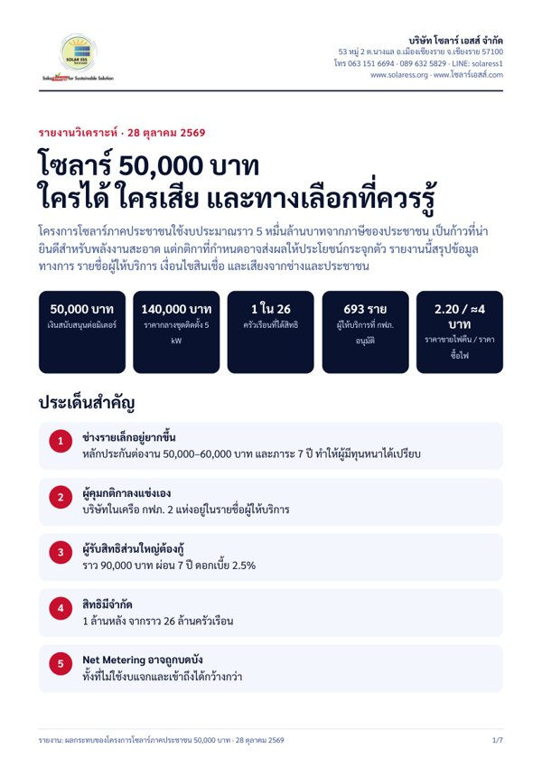

ข่าวทั้งหมด โซลาร์ 50,000 บาท สำหรับเจ้าของบ้าน ดาต้าเซ็นเตอร์ นวัตกรรม การติดตั้งโซลาร์ทั่วโลก การใช้พลังงานของโลก สรุปฉบับเต็ม: โซลาร์ 50,000 บาท ใครได้สิทธิ์ ลงทะเบียนเมื่อไร ต้องจ่ายเองเท่าไร สินเชื่อ และการขายไฟคืน อัปเดตทุกครั้งที่มีประกาศใหม่
อ่านสรุป →
28 ตุลาคม 2026 · ผู้ติดตั้ง
เงื่อนไขผู้ติดตั้งในโครงการโซลาร์ 50,000 บาท: ทำไมผู้ติดตั้งบางรายถอนตัว และมีผลกับคุณอย่างไร
คู่มือผู้ให้บริการติดตั้ง (Vendor Handbook) ของโครงการ ลงวันที่ 27 ตุลาคม กำหนดราคากลางของชุดติดตั้ง และภาระผูกพันระยะยาวของผู้ติดตั้ง ผู้ติดตั้งที่เป็นที่รู้จักบางรายประกาศไม่เข้าร่วม ขณะที่บางส่วนเห็นด้วยกับกฎที่เข้มขึ้น สรุปสิ่งที่อยู่ในคู่มือ เสียงตอบรับ และสิ่งที่คุณควรรู้ก่อนสมัคร
ราคากลางชุดติดตั้ง 140,000 บาท
ผู้ติดตั้งรับประกันงาน 7 ปี
หลักประกันต่องาน 50,000–60,000 บาท + 10,000 บาท
ผู้ติดตั้งต้องทำอะไรบ้าง ต้องขึ้นทะเบียนผู้รับจ้าง (AVL) กับ กฟภ. หรือ กฟน. มีผู้จัดการโครงการ วิศวกรออกแบบที่มีใบอนุญาต ผู้ควบคุมงาน และช่างที่ผ่านการอบรม ใช้สัญญามาตรฐานของการไฟฟ้าและแจ้งราคาสุทธิชัดเจน รับประกันงานติดตั้ง 7 ปีพร้อมประกันอัคคีภัย ทำความสะอาดและบำรุงรักษาอย่างน้อยปีละครั้งตลอด 7 ปี และตอบกลับเมื่อมีเหตุขัดข้องภายใน 24 ชั่วโมง แต่ละงานต้องวางหนังสือค้ำประกันธนาคาร 6 เดือน หากส่งมอบงานไม่ทันจะถูกยึด และวางหลักประกันอีก 10,000 บาทตลอด 7 ปี ผู้ติดตั้งห้ามรับรองผลสินเชื่อ เงินสนับสนุน หรือสิทธิขายไฟแทนหน่วยงานรัฐ
ผู้ติดตั้งว่าอย่างไร เพจผู้ติดตั้ง SolarHub สรุปคู่มือว่า “จบข่าว...!!! ใครจะรับก็รับเหอะ” และ WAY Solar ประกาศไม่เข้าร่วม โดยระบุถึงความเสี่ยงต่อธุรกิจในระยะยาว ในความคิดเห็น ผู้ติดตั้งรายเล็กจำนวนมากมองว่ามีแต่บริษัทใหญ่ที่ทุนหนาเท่านั้นที่แบกหลักประกันได้นานขนาดนี้ บางรายจะหันไปรับลูกค้าที่ใช้สิทธิลดหย่อนภาษี 200,000 บาทแทน ขณะที่บางส่วนเห็นว่ากฎนี้ช่วยกันผู้ติดตั้งที่ไม่รับผิดชอบออกไป
เจ้าของบ้านว่าอย่างไร ความกังวลที่พบมากที่สุดคือเรื่องหนี้ (“กับดักหนี้”) และคำถามว่าใครได้ประโยชน์จริง บางคนเห็นว่าโครงการนี้เหมาะกับตน เพราะการไฟฟ้าเป็นผู้กำกับดูแลผู้ติดตั้งและบริการหลังการขาย
มีผลกับคุณอย่างไร
ต้องติดตั้งกับผู้ติดตั้งที่ขึ้นทะเบียนเท่านั้นจึงจะได้ 50,000 บาท ตรวจสอบรายชื่อที่ peoplesolar.pea.co.th หรือ peoplesolar.mea.or.th ก่อนเซ็นสัญญาใด ๆการคุ้มครองตามโครงการเป็นสิ่งที่ควรขอในทุกกรณี ได้แก่ รับประกันงานติดตั้ง 7 ปี ทำความสะอาดและบำรุงรักษาทุกปี และตอบกลับเหตุขัดข้องภายใน 24 ชั่วโมง ขอให้ผู้ติดตั้งระบุไว้เป็นลายลักษณ์อักษรใช้สิทธิโครงการนี้ร่วมกับการลดหย่อนภาษี 200,000 บาทไม่ได้ เปรียบเทียบทั้งสองทางก่อนตัดสินใจไม่ต้องรีบ ลงทะเบียนได้ถึง 31 มกราคม 2570 และการสำรวจหลังคาจะเริ่มหลังจากนั้น ระหว่างนี้ลองจดเลขมิเตอร์ช่วง 8.00–16.00 น. สักหนึ่งสัปดาห์ เพื่อดูว่าบ้านใช้ไฟกลางวันเท่าไรหมายเหตุเรื่องกลุ่มตัวอย่าง อ่านความคิดเห็นเมื่อวันที่ 28 ตุลาคม 2026 และโหลดได้เพียงบางส่วนของแต่ละโพสต์ จึงไม่ใช่โพลสำรวจความเห็น เราไม่ได้บันทึกชื่อผู้แสดงความคิดเห็น คู่มืออาจยังเป็นฉบับร่าง โปรดตรวจสอบฉบับทางการอีกครั้ง
จุดยืนของโซลาร์ เอสส์ โซลาร์ เอสส์เสนอว่าสิทธิลดหย่อนภาษีเงินได้บุคคลธรรมดาสูงสุด 200,000 บาท เป็นแนวทางที่ปฏิบัติได้จริงมากกว่าสำหรับการใช้ไฟฟ้าในอนาคตของเรา และแนวทางที่ดีที่สุดในอุดมคติคือ Net Metering เราให้บริการติดตั้งระบบโซลาร์ที่ใช้สิทธิลดหย่อนภาษีได้ พร้อมใบกำกับภาษีอิเล็กทรอนิกส์เต็มรูป สองสิทธินี้ใช้ร่วมกันไม่ได้ จึงควรเปรียบเทียบให้เหมาะกับบ้านของคุณ เราตรวจหน้างานให้ฟรีและเปรียบเทียบให้อย่างตรงไปตรงมา โทร 063 151 6694 หรือ 089 632 5829 หรือไลน์ solaress1

รายงานฉบับเต็มพร้อมภาพประกอบ (PDF 9 หน้า) บทนำ: ทำไมประชาชนต้องมีส่วนร่วมในโซลาร์ (ความต้องการไฟของดาต้าเซ็นเตอร์และ AI, RE100) ไทม์ไลน์ เงื่อนไขผู้ติดตั้งและเงินค้ำประกัน รายชื่อผู้ให้บริการที่ กฟภ. อนุมัติ เปรียบเทียบสามทางเลือกพร้อมกราฟประโยชน์ทางภาษี สิทธิ 1 ใน 26 ครัวเรือน Net Metering ข้อเสนอหลัก 3 ประการ (วางทุกทางเลือกให้ประชาชนเลือก การไฟฟ้าต้องเป็นผู้พิทักษ์กติกาเท่านั้น ไม่ใช่ผู้เล่นในตลาดเสรี Net Metering คือเป้าหมายสูงสุด) และบทสรุป
ดาวน์โหลดรายงาน (PDF) ↓ Facebook: SolarHub, 27 October 2026 (อ่านราว 20 จาก 253 ความคิดเห็น) Facebook: โพสต์เรื่อง WAY Solar ไม่ร่วมโครงการ 28 ตุลาคม 2026 Facebook: กฟภ. คู่มือโครงการสำหรับประชาชน (อ่านความคิดเห็น) Facebook: THE STANDARD เปิดโครงการ (อ่านความคิดเห็น) กรุงเทพธุรกิจ 27 ตุลาคม 2026: ไทม์ไลน์ Sanook 27 ตุลาคม 2026: วิธีตรวจสอบผู้ติดตั้งที่ขึ้นทะเบียน
27 ตุลาคม 2026 · บทวิเคราะห์
การเดินทางสู่ไฟฟ้าของไทย: ใครจ่าย ใครได้?
เมื่อดาต้าเซ็นเตอร์ทำให้ความต้องการไฟสะอาดพุ่งขึ้น เราดูว่าใครได้ขายไฟ ใครได้ประโยชน์จากลดหย่อนภาษี 200,000 บาทและโครงการ 50,000 บาท และอะไรยังไม่ชัด พร้อมให้ระดับหลักฐานทุกข้อ
ขนาดขั้นต่ำที่ขายไฟสีเขียวได้ตรง 1,000 kVA
ราคารับซื้อไฟจากบ้าน 2.20 บาท
บ้านใช้ไฟน้อย เหลือหลังหักค่างวด ≈ 210 บาท/เดือน
ข้อค้นพบหลัก กติกาการขายไฟตรงเขียนไว้สำหรับโรงไฟฟ้าขนาดใหญ่ ราคาต่อหน่วยของบ้านกับโซลาร์ฟาร์มใกล้เคียงกัน แต่สัญญาและขนาดต่างกันมาก ลดหย่อนภาษีให้ประโยชน์มากขึ้นตามรายได้ เงื่อนไขโครงการ 50,000 บาทยังไม่ชัด และบ้านที่ใช้ไฟน้อยมีกำไรบางที่สุด
ก่อนเซ็น: เช็กลิสต์ 6 ข้อ ทั้งหลักเกณฑ์ การเลือกผู้ติดตั้ง ดอกเบี้ยหลังโปร ระยะรับซื้อไฟ การใช้ไฟกลางวัน และการรับประกัน
อ่านบทวิเคราะห์ฉบับเต็ม
27 ตุลาคม 2026 · ดาต้าเซ็นเตอร์
ดาต้าเซ็นเตอร์: ต้นทุนที่แท้จริงต่อสิ่งแวดล้อม เศรษฐกิจและสังคม และประโยชน์
คู่มือฉบับใหม่ของเรารวบรวมหลักฐานว่าดาต้าเซ็นเตอร์ส่งผลอย่างไรต่อไฟฟ้า การปล่อยคาร์บอน น้ำ คุณภาพอากาศ ขยะอิเล็กทรอนิกส์ การจ้างงาน ค่าไฟ และรายได้ภาษี และประเทศไทยกำลังรับมืออย่างไร
CO₂ ต่อปีในปัจจุบัน ≈ 180 ล้านตัน
งานต่อศูนย์ขนาดใหญ่ (สหรัฐฯ) ≈ 100–200
ผู้บริหารไทยที่กังวลเรื่องน้ำที่สุด 68.8%
สิ่งแวดล้อม ใช้ไฟราว 415 TWh ในปี 2024 และกำลังไปสู่ 945 TWh ในปี 2030 ราว 30% ยังมาจากถ่านหิน ศูนย์ขนาดใหญ่ใช้น้ำได้ถึง 19 ล้านลิตรต่อวัน มีเครื่องปั่นไฟดีเซลสำรอง และขยะอิเล็กทรอนิกส์จากการเปลี่ยนชิปเร็ว
เศรษฐกิจและสังคม เงินลงทุนมหาศาลแต่งานประจำน้อย ในระบบไฟฟ้าหนึ่งของสหรัฐฯ ดาต้าเซ็นเตอร์เป็นสาเหตุหลักที่ราคากำลังผลิตพุ่งเกือบเก้าเท่าจนกระทบค่าไฟบ้าน สิทธิประโยชน์ภาษีหลายพันล้าน และการแย่งน้ำกับเกษตรกรและชุมชน
ประเทศไทย กรอบคัดกรอง 4 เสาหลัก แผนที่ไฟฟ้าและน้ำ ระบบหล่อเย็นวงจรปิดสำหรับโครงการใหม่ โครงการนำร่องซื้อไฟพลังงานหมุนเวียนโดยตรง 2,000 MW และข้อเสนอให้ผู้ใช้ไฟรายใหญ่รับต้นทุนจริงของก๊าซนำเข้า
อ่านฉบับเต็ม: ดาต้าเซ็นเตอร์ ต้นทุนที่แท้จริงและประโยชน์ (ภาษาไทย)
27 ตุลาคม 2026 · ดาต้าเซ็นเตอร์
ทำไมดาต้าเซ็นเตอร์ใช้ไฟและน้ำมากขนาดนี้
ปี 2024 ดาต้าเซ็นเตอร์ทั่วโลกใช้ไฟราว 415 TWh หรือประมาณ 1.5% ของไฟฟ้าทั้งโลก และ IEA คาดว่าจะเพิ่มขึ้นกว่าเท่าตัวเป็นราว 945 TWh ภายในปี 2030 สาเหตุหลักคือ AI เพราะชิปใช้ไฟมากกว่าเดิมมากและร้อนจัด
ใช้ไฟทั่วโลก 2024 415 TWh
คาดการณ์ 2030 945 TWh
น้ำของศูนย์ขนาดใหญ่ต่อวัน สูงสุด 19 ล้านลิตร
ทำไมใช้ไฟมาก AI ทำงานบนชิปเฉพาะทาง (GPU) จำนวนมากที่กินไฟมากกว่าเซิร์ฟเวอร์ทั่วไปหลายเท่า IEA ระบุว่าตัวเซิร์ฟเวอร์ใช้ไฟราว 60% ของดาต้าเซ็นเตอร์สมัยใหม่ ส่วนระบบระบายความร้อนใช้ราว 7% ในศูนย์ขนาดใหญ่ที่มีประสิทธิภาพสูง และมากกว่า 30% ในศูนย์ที่ประสิทธิภาพต่ำ ที่เหลือส่วนใหญ่เป็นระบบจัดเก็บข้อมูลและเครือข่าย
ทำไมใช้น้ำมาก ความร้อนส่วนใหญ่ถูกระบายด้วยระบบหล่อเย็นแบบระเหย คือให้น้ำดูดความร้อนแล้วระเหยออกไป Lincoln Institute รายงานว่าดาต้าเซ็นเตอร์ขนาดใหญ่อาจใช้น้ำถึง 5 ล้านแกลลอนสหรัฐต่อวัน (ราว 19 ล้านลิตร) ใกล้เคียงเมืองที่มีประชากร 50,000 คน ยังมีการใช้น้ำทางอ้อมด้วย เพราะไฟที่ดาต้าเซ็นเตอร์ในสหรัฐฯ ใช้ราวครึ่งหนึ่งมาจากโรงไฟฟ้าเชื้อเพลิงฟอสซิล ซึ่งต้องใช้น้ำทำไอน้ำ
ต้องเลือกระหว่างน้ำกับไฟ ผู้ประกอบการประหยัดน้ำได้ด้วยการใช้ไฟมากขึ้น (ระบบวงจรปิดหรือระบบลม) หรือประหยัดไฟได้ด้วยการใช้น้ำมากขึ้น เมื่อชิป AI ร้อนจัด หลายแห่งจึงหันไปใช้น้ำ
เกี่ยวกับไทยอย่างไร ไทยอนุมัติการลงทุนดาต้าเซ็นเตอร์มูลค่าสูง และผลสำรวจของสภาอุตสาหกรรมฯ พบว่าผู้บริหารส่วนใหญ่กังวลเรื่องน้ำมากที่สุด (ดู ดาต้าเซ็นเตอร์บูมในไทย ) โซลาร์ผลิตไฟได้โดยไม่ต้องเผาเชื้อเพลิงหรือต้มน้ำ ซึ่งเป็นเหตุผลหนึ่งที่ดาต้าเซ็นเตอร์ขอซื้อไฟพลังงานหมุนเวียนโดยตรง
ที่มา: IEA รายงาน Energy and AI (ภาษาอังกฤษ) ที่มา: Lincoln Institute of Land Policy 17 ตุลาคม 2025 (ภาษาอังกฤษ)
27 ตุลาคม 2026 · เสียงประชาชน
คนบน Facebook พูดถึงโซลาร์ 50,000 บาทว่าอย่างไร
เราอ่านความคิดเห็นสาธารณะราว 175 ความคิดเห็น ใต้โพสต์ Facebook ที่มีคนแชร์มาก 4 โพสต์ (25–26 ตุลาคม) ความกังวลมีมากกว่าความเห็นสนับสนุนราวหกต่อหนึ่ง และส่วนใหญ่เป็นเรื่องเงินและความไว้ใจ ไม่ใช่เรื่องว่าโซลาร์ใช้ได้จริงหรือไม่
ความคิดเห็นที่อ่าน ≈ 175
ส่วนใหญ่กังวล ≈ 70%
ส่วนใหญ่สนับสนุน ≈ 12%
ฝ่ายที่สนับสนุนพูดว่า คุ้มสำหรับบ้านที่ใช้ไฟตอนกลางวัน เช่น ผู้เกษียณ โฮมออฟฟิศ ร้านค้า และร้านกาแฟที่เปิดแอร์ ผู้ที่ติดระบบ 5 kW มา 3 ปีเล่าว่าประหยัดได้ราว 2,000 บาทต่อเดือนเมื่อค่าไฟเกินราว 5,000 บาท บางคนยินดีที่รัฐช่วยคนที่ไม่มีเงินก้อน มองว่าพลังงานจะแพงขึ้นเรื่อย ๆ และถ้าติดกันมากจะลดการนำเข้าก๊าซได้
สิ่งที่คนกังวล อันดับหนึ่งคือหนี้ มองว่าเงิน 50,000 บาทเป็นเหยื่อล่อให้กู้ก้อนใหญ่กว่า รองลงมาคือความไม่ไว้ใจว่าใครเป็นผู้จัดหาอุปกรณ์และใครได้ประโยชน์ ราคารับซื้อ 2.20 บาทต่ำเมื่อเทียบกับค่าไฟที่จ่ายกว่า 4 บาท กลัวผู้ติดตั้งขึ้นราคา ระยะคืนทุนนานเมื่อเทียบอายุอินเวอร์เตอร์และแบตเตอรี่ กลางคืนใช้ไม่ได้ถ้าไม่มีแบตเตอรี่ และเรื่องความปลอดภัยและคุณภาพ (ไฟไหม้ หลังคารั่ว ช่างไม่ได้มาตรฐาน แผงที่ไม่มี มอก. ขยะอิเล็กทรอนิกส์) บางคนเห็นว่าควรนำเงินไปลดราคาน้ำมัน ช่วยน้ำท่วม เกษตรกร หรือผู้สูงอายุแทน หรือกังวลว่าคนที่มีเงินอยู่แล้วเท่านั้นจะได้ประโยชน์
คำถามที่พบบ่อย รัฐจะรับซื้อไฟกี่ปี แผงมาจากไหน รับประกันกี่ปี บ้านที่ติดโซลาร์แล้วใช้สิทธิ์ขยายระบบได้ไหม ต้องใช้ผู้ติดตั้งที่รัฐกำหนดหรือไม่ และแบตเตอรี่ต้องจ่ายเพิ่มเท่าไร
หมายเหตุเรื่องกลุ่มตัวอย่าง โพสต์ 2 ใน 4 นำเสนอในเชิงวิจารณ์ ผลนี้จึงไม่ใช่โพล อ่านความคิดเห็นเมื่อ 27 ตุลาคม 2026 ก่อนมีหลักเกณฑ์ทางการ และไม่ได้บันทึกชื่อผู้แสดงความคิดเห็น คำตอบของเราต่อ 5 ข้อกังวลหลักอยู่ใน สรุปโซลาร์ 50,000 บาท
Facebook: คุยทุกเรื่องกับสนธิ (อ่านราว 90 จาก 374 ความคิดเห็น) Facebook: Jarm – จาม (อ่านราว 38 ความคิดเห็น) Facebook: THE STANDARD (อ่านราว 37 ความคิดเห็น) Facebook: ไทยรัฐออนไลน์ (อ่านราว 12 ความคิดเห็น)
คุณเห็นด้วยกับโครงการโซลาร์ 50,000 บาทหรือไม่? เห็นด้วย ไม่เห็นด้วย ยังไม่ตัดสินใจ
โหวตได้ 1 ครั้งต่ออุปกรณ์/เครือข่าย ผลโหวตจะแสดงหลังคุณโหวต
27 ตุลาคม 2026 · ดาต้าเซ็นเตอร์
ดาต้าเซ็นเตอร์บูมในไทย: มีผลกับระบบไฟฟ้าอย่างไร
บีโอไออนุมัติ โครงการดาต้าเซ็นเตอร์ 26 โครงการ มูลค่าเกือบ 5 แสนล้านบาทในปี 2025 และคำขอใหม่เกิน 1 ล้านล้านบาท ภายในไตรมาสแรกของปี 2026 โครงการที่วางแผนไว้รวมราว 2.87 GW ส่วนใหญ่อยู่ในเขตพัฒนาพิเศษภาคตะวันออก (EEC)
โครงการที่วางแผน 2.87 GW
อนุมัติปี 2025 ≈ 5 แสนล้านบาท
ดาต้าเซ็นเตอร์ทั่วโลก 2025 ≈ 485 TWh
ทั่วโลก IEA ประเมินว่าดาต้าเซ็นเตอร์ใช้ไฟราว 485 TWh ในปี 2025 หรือประมาณ 1.5% ของไฟฟ้าทั้งโลก และคาดว่าจะเพิ่มเป็นราว 945 TWh (ประมาณ 3%) ภายในปี 2030 โดยศูนย์ที่สร้างเพื่อ AI ใช้ไฟราวหนึ่งในสาม
ในประเทศไทย รายงานระบุว่าไทยมีกำลังผลิตเพียงพอ (กำลังผลิตสำรองเกิน 25%) แต่คอขวดอยู่ที่ระบบสายส่ง กฟผ. วางแผนลงทุนปรับปรุงสายส่งใน EEC 3.1 หมื่นล้านบาท โครงการนำร่องให้ดาต้าเซ็นเตอร์ซื้อไฟพลังงานหมุนเวียนโดยตรงจำกัดไว้ที่ 2,000 MW และหลักเกณฑ์ยังไม่ออก ณ กลางปี 2026 มีรายงานว่าดาต้าเซ็นเตอร์จ่ายค่าไฟราว 5–6 บาทต่อหน่วย เทียบกับบ้านเรือนราว 3–4 บาท อีกเรื่องที่น่ากังวลคือน้ำ ผลสำรวจของสภาอุตสาหกรรมฯ พบว่าผู้บริหาร 68.8% กังวลเรื่องน้ำมากที่สุด
สิ่งนี้มีความหมายกับคุณอย่างไร: ผู้ใช้ไฟรายใหญ่รายใหม่จะใช้งบปรับปรุงระบบไฟฟ้าร่วมกับทุกคนในอีกไม่กี่ปีข้างหน้า รายงานไม่ได้บอกว่าค่าไฟบ้านจะขึ้นเพราะเรื่องนี้ เราจึงไม่คาดการณ์เช่นนั้น สิ่งที่คุณควบคุมได้คือสัดส่วนไฟตอนกลางวันที่คุณผลิตใช้เองบนหลังคาบ้าน
ที่มา: The Nation ผ่าน The Star 22 สิงหาคม 2026 (ภาษาอังกฤษ) ที่มา: Our World in Data ใช้ตัวเลขประมาณการของ IEA 20 กรกฎาคม 2026 (ภาษาอังกฤษ)
27 ตุลาคม 2026 · พลังงานโลก
การใช้พลังงานของโลกปี 2025: ไฟฟ้าโตเร็วกว่าสองเท่า และโซลาร์นำการเติบโต
รายงาน Global Energy Review 2026 ของ IEA ระบุว่าความต้องการพลังงานของโลกเพิ่มขึ้น 1.3% ในปี 2025 ต่ำกว่าค่าเฉลี่ยสิบปีที่ผ่านมา ขณะที่ความต้องการไฟฟ้าเพิ่มเกือบ 3% และโซลาร์เป็นแหล่งพลังงานใหม่ที่ใหญ่ที่สุด
ความต้องการพลังงาน 2025 +1.3%
ความต้องการไฟฟ้า ≈ +3%
ไฟจากโซลาร์ที่เพิ่มขึ้น 600 TWh
ไฟฟ้าคือส่วนที่โตเร็ว ความต้องการไฟฟ้าโตเร็วกว่าการใช้พลังงานโดยรวมมากกว่าสองเท่า ในสหรัฐฯ ดาต้าเซ็นเตอร์คิดเป็นครึ่งหนึ่งของการเติบโตของความต้องการไฟฟ้า ส่วนทั่วโลก ดาต้าเซ็นเตอร์และรถยนต์ไฟฟ้าโตเร็วจากฐานที่ยังเล็ก
โซลาร์นำการเติบโต โซลาร์ตอบสนองความต้องการพลังงานที่เพิ่มขึ้นได้มากกว่าหนึ่งในสี่ และผลิตไฟเพิ่มราว 600 TWh หรือประมาณ 70% ของการผลิตไฟฟ้าที่เพิ่มขึ้น ทั่วโลกติดตั้งพลังงานหมุนเวียนใหม่เป็นสถิติ 800 GW โดย 75% เป็นโซลาร์ แหล่งพลังงานคาร์บอนต่ำตอบสนองความต้องการที่เพิ่มขึ้นเกือบ 60% และการปล่อย CO₂ เพิ่มราว 0.4%
สิ่งนี้มีความหมายกับคุณอย่างไร: แผงโซลาร์บนหลังคาบ้านคุณคือแหล่งไฟฟ้าใหม่หลักของโลกแล้ว ไม่ใช่เทคโนโลยีทดลอง ดูการเปลี่ยนแปลงการติดตั้งในแต่ละประเทศได้ที่ ติดตั้งโซลาร์ในจีนลดลง แต่ทั่วโลกที่เหลือเพิ่มขึ้น
ที่มา: IEA รายงาน Global Energy Review 2026 (ภาษาอังกฤษ)
อัปเดต 27 ต.ค. 2569: การพิจารณาของ ครม. เลื่อนเป็นวันอังคารที่ 27 ต.ค. และจะเปิดลงทะเบียนผ่าน กฟภ./กฟน. ทันทีหลังอนุมัติ ตัวอย่างของ กฟภ.: ระบบ 5 kW ราว 140,000 บาท หักเงินอุดหนุนแล้วเหลือจ่ายเองราว 90,000 บาท
อ่านสรุปฉบับเต็มและอัปเดตล่าสุด → 24 ตุลาคม 2569 · นโยบาย
อุดหนุนโซลาร์ 50,000 บาท ให้ 1 ล้านครัวเรือน: ความคืบหน้าล่าสุด
แผนของรัฐบาลที่จะอุดหนุนค่าติดตั้งโซลาร์เซลล์สูงสุด 50,000 บาทต่อครัวเรือน จำนวน 1 ล้านครัวเรือน ผ่านคณะกรรมการกลั่นกรองแล้ว และคาดว่าจะเข้าที่ประชุมคณะรัฐมนตรีวันที่ 26 ตุลาคม นี่คือสิ่งที่มีการรายงานจนถึงตอนนี้ และสิ่งที่เราแนะนำให้ทำระหว่างรอประกาศหลักเกณฑ์
สรุปจากรายงานของ The Nation (20 ตุลาคม 2569 และ 2 ตุลาคม 2569 ) The Thaiger (20 ตุลาคม 2569) และ Pattaya Mail (20 กันยายน 2569) เครดิตการรายงานข่าวทั้งหมดเป็นของสื่อเหล่านี้ ส่วนคำแนะนำสำหรับลูกค้าเป็นของเรา
เงินอุดหนุนต่อครัวเรือน สูงสุด ฿50,000
ครัวเรือน ระยะที่ 1 1 ล้าน
ขายไฟคืน (net billing) ฿2.20/หน่วย
สถานะตอนนี้ คณะกรรมการกลั่นกรองการใช้จ่ายเงินกู้อนุมัติข้อเสนอวงเงิน 5 หมื่นล้านบาทของกระทรวงมหาดไทยแล้ว โดยใช้เงินจากส่วนการเปลี่ยนผ่านพลังงานของพระราชกำหนดกู้เงิน แต่ ยังไม่เป็นที่สิ้นสุดจนกว่าคณะรัฐมนตรีจะอนุมัติ ซึ่งคาดว่าจะพิจารณาวันที่ 26 ตุลาคมใครได้ ได้เท่าไร ครัวเรือนละ 1 สิทธิ์ อุดหนุนค่าติดตั้งสูงสุด 50,000 บาท มีรายงานว่าผู้สมัครเพียงต้องเป็นผู้ใช้ไฟฟ้าที่มีมิเตอร์ในชื่อตนเอง หลักเกณฑ์ฉบับสุดท้ายยังไม่ประกาศติดตั้งอะไรได้บ้าง ข้อเสนอเดิมอนุญาตระบบขนาดไม่เกิน 10 kW ติดบนหลังคา บนพื้นดิน หรือลอยน้ำในบ่อ แต่ขายไฟคืนเข้าระบบได้ไม่เกิน 5 kWขายไฟส่วนเกิน รับซื้อที่ 2.20 บาทต่อหน่วยแบบ net billing คณะกรรมการนโยบายพลังงานแห่งชาติ (กพช.) ขยายเป้าหมายรับซื้อเป็น 10,000 MW เมื่อเดือนกันยายน และขยายระยะเวลารับซื้อเป็น 20 ปี (รอบก่อนหน้า 10 ปี) ครัวเรือนที่เข้าร่วมจะได้รับสมาร์ตมิเตอร์ฟรีสินเชื่อส่วนที่เหลือ คาดว่าธนาคารออมสิน ธนาคารอาคารสงเคราะห์ และ ธ.ก.ส. จะปล่อยสินเชื่อโซลาร์ มีรายงานว่าดอกเบี้ย 2.5% ต่อปี ผ่อน 7 ปี ไม่ต้องใช้หลักทรัพย์ค้ำประกัน และนำรายได้จากการขายไฟไปผ่อนชำระใครติดตั้งได้ ข้อเสนอเดือนตุลาคมระบุว่าผู้ติดตั้งต้องได้มาตรฐานสากล มีวิศวกรที่มีคุณสมบัติ มีฐานะการเงินมั่นคง และอยู่ในรายชื่อผู้ติดตั้ง (Vendor List) ของการไฟฟ้าเมื่อไร มีรายงานว่าจะเปิดลงทะเบียนวันที่ 1 พฤศจิกายน หรือราวกลางเดือนพฤศจิกายน ยังไม่มีวันที่ยืนยัน ส่วนระยะที่ 2 อีก 500,000 ครัวเรือน (2.5 หมื่นล้านบาท) ยังเป็นเพียงข้อเสนอ
ความหมายสำหรับคุณ: เงินอุดหนุน 50,000 บาทช่วยได้ราวหนึ่งในสามของระบบบ้านขนาด 5 kW นี่อาจเป็นช่วงเวลาที่ดีที่สุดในรอบหลายปีที่จะติดโซลาร์ แต่ อย่าเซ็นสัญญาหรือจ่ายมัดจำให้ใครที่สัญญาว่าจะได้เงินอุดหนุน จนกว่าหลักเกณฑ์และช่องทางสมัครจะประกาศอย่างเป็นทางการ โครงการแบบนี้มักดึงดูดผู้ติดตั้งที่ไม่ได้มาตรฐาน และรัฐมีแผนอนุญาตเฉพาะผู้ติดตั้งที่อยู่ในรายชื่อเท่านั้น สิ่งที่ทำได้ตอนนี้: ตรวจสอบว่ามิเตอร์ไฟฟ้าอยู่ในชื่อของคุณ เก็บบิลค่าไฟล่าสุดไว้ และดูว่าบ้านใช้ไฟ 1 เฟสหรือ 3 เฟส เจ้าหน้าที่ประเมินว่าระบบ 5 kW อาจมีรายได้จากการขายไฟส่วนเกินราว 1,000 บาทต่อเดือน ซึ่งเป็นเพียงการประมาณการ และที่ราคา 2.20 บาทต่อหน่วย ไฟที่ใช้เองยังคุ้มกว่าไฟที่ขาย เราจึงออกแบบระบบให้ใช้เองช่วงกลางวันก่อน นัดปรึกษา แล้วเราจะแจ้งคุณทันทีเมื่อหลักเกณฑ์การสมัครออกมา
ที่มา: The Nation, “Thai screening board clears 50bn-baht solar plan with Cabinet review expected on Oct 26” 20 ตุลาคม 2569; The Nation, “Thailand broadens solar scheme with THB75bn funding plan” 2 ตุลาคม 2569; The Thaiger, “Thailand solar subsidy gets committee nod for 1m homes” 20 ตุลาคม 2569; Pattaya Mail, “Thailand expands public solar target to 10,000 megawatts as power costs ease” 20 กันยายน 2569 (ภาษาอังกฤษทั้งหมด)
24 ตุลาคม 2569 · ความปลอดภัยและมาตรฐาน
แผงโซลาร์ที่ขายในไทยต้องผ่าน มอก. ภาคบังคับ เร็ว ๆ นี้
กระทรวงอุตสาหกรรมกำลังทำให้มาตรฐานความปลอดภัยของแผงโซลาร์เป็นมาตรฐานบังคับ และกำลังเตรียมอีก 7 มาตรฐานสำหรับสายไฟ แบตเตอรี่ อินเวอร์เตอร์ และอุปกรณ์ป้องกัน นี่คือสิ่งที่เปลี่ยนไป และเหตุผลที่สำคัญสำหรับผู้ซื้อระบบ
สรุปจาก “Thailand sets October deadline for solar panel safety standards” Pattaya Mail 17 ตุลาคม 2569 และ “Thailand’s TISI Race Heats Up: Factory Audits Could Squeeze Compliant PV Module Supply” โดย Ryan Tey Tze Yang, Shanghai Metals Market (SMM) 27 สิงหาคม 2569 เครดิตการรายงานข่าวเป็นของ Pattaya Mail และ SMM ส่วนข้อสังเกตสำหรับประเทศไทยเป็นของเรา
ผู้ผลิต/ผู้นำเข้า ปรับสูงสุด ฿2 ล้าน
ผู้ขาย ปรับสูงสุด ฿500,000
มาตรฐานที่กำลังตามมา 7
มาตรฐาน มอก. 61730 เล่ม 2-2567 ซึ่งสอดคล้องกับมาตรฐานสากล IEC 61730-2 ครอบคลุมความปลอดภัยด้านไฟฟ้า กลไก และอัคคีภัยของแผง เป็นมาตรฐานทั่วไป (ไม่บังคับ) มาตั้งแต่มิถุนายน 2568 และกำลังเปลี่ยนเป็นมาตรฐานบังคับ มีผลเมื่อประกาศในราชกิจจานุเบกษา ซึ่งรัฐมนตรีว่าการกระทรวงอุตสาหกรรมสั่งให้ดำเนินการภายในเดือนตุลาคมทดสอบอะไรบ้าง ความทนความร้อน การตัดวงจรไฟฟ้าอย่างปลอดภัย สมรรถนะที่อุณหภูมิสูง การป้องกันไฟฟ้ารั่ว การต้านทานการลุกลามของไฟจากความร้อนหรือประกายไฟ และความแข็งแรงเชิงกลใครต้องปฏิบัติตาม ผู้ผลิต ผู้นำเข้า และผู้ขายต้องจำหน่ายเฉพาะแผงที่ได้รับการรับรอง ผลิตหรือนำเข้าแผงที่ไม่ได้มาตรฐาน มีโทษจำคุกไม่เกิน 2 ปี ปรับไม่เกิน 2 ล้านบาท ส่วนผู้ขาย จำคุกไม่เกิน 6 เดือน ปรับไม่เกิน 500,000 บาทมาตรฐานถัดไป กำลังเตรียมอีก 7 มาตรฐาน ได้แก่ สายไฟ DC แบตเตอรี่ลิเทียม ฟิวส์ อินเวอร์เตอร์ เบรกเกอร์ DC ขั้วต่อ และตู้รวมสาย (combiner box)อาจขาดตลาดช่วงสั้น ๆ SMM ระบุว่า สมอ. ตรวจโรงงานที่ส่งสินค้าเข้าไทยแยกเป็นรายโรงงาน และใบรับรอง IEC ไม่ได้แปลงเป็นใบอนุญาตของไทยโดยอัตโนมัติ หากกฎมีผลก่อนที่โรงงานจะผ่านการรับรองมากพอ แผงที่ได้ มอก. อาจขาดตลาดชั่วคราว ณ เดือนสิงหาคม SMM ยังไม่เห็นราคาพรีเมียมที่ชัดเจนสำหรับแผงที่ได้รับรอง
ความหมายสำหรับคุณ: นี่เป็นข่าวดีสำหรับผู้ซื้อ ระบบที่ไหม้และละลายซึ่งพบในการตรวจสอบของ สคบ. ปีนี้ (ดู ข่าววันที่ 17 ตุลาคม ) ส่วนใหญ่มาจากอุปกรณ์และการเดินสายที่ไม่ได้มาตรฐาน เมื่อเปรียบเทียบใบเสนอราคา ให้ขอว่าแผงทุกแผงต้องมีเครื่องหมาย มอก. และสัญญาระบุยี่ห้อ รุ่น และมาตรฐานของอุปกรณ์ทุกชิ้น แผงที่เราเสนอเป็นยี่ห้อ Tier-1 ที่มีใบรับรอง IEC 61215 / 61730 และเราจะยืนยันใบอนุญาต มอก. ในทุกใบเสนอราคาเมื่อกฎมีผลบังคับ รวมทั้งแจ้งลูกค้าหากสินค้าเริ่มขาดตลาด ดู สินค้าที่เราเลือก: แผงโซลาร์
ที่มา: Pattaya Mail, “Thailand sets October deadline for solar panel safety standards” 17 ตุลาคม 2569; SMM, “Thailand’s TISI Race Heats Up” 27 สิงหาคม 2569 (ภาษาอังกฤษทั้งคู่)
24 ตุลาคม 2569 · สิ่งแวดล้อม
ไทยเตรียมนิคมรีไซเคิลแผงโซลาร์เก่าและแบตเตอรี่ EV
แผงโซลาร์ล็อตใหญ่ล็อตแรกของไทยกำลังใกล้หมดอายุการใช้งาน กระทรวงอุตสาหกรรมต้องการนิคมเฉพาะที่ควบคุมได้สำหรับรีไซเคิลแผง พร้อมแบตเตอรี่ EV และขยะอิเล็กทรอนิกส์ และเพิ่มโทษปรับการลักลอบทิ้งให้หนักขึ้นมาก
สรุปจาก “Thailand prepares for surge in solar and EV battery waste with new recycling estate” The Nation 17 ตุลาคม 2569 เครดิตบทความต้นฉบับเป็นของ The Nation ส่วนข้อสังเกตสำหรับประเทศไทยเป็นของเรา
ทำไมต้องตอนนี้ แผงที่ติดตั้งเมื่อราว 10 ปีก่อนกำลังเข้าใกล้อายุใช้งานราว 15 ปีที่กระทรวงใช้ประเมิน จึงอาจมีขยะแผงจำนวนมากภายใน 1–2 ปี แบตเตอรี่ EV เป็นขยะอีกกลุ่มที่เพิ่มขึ้นตามจำนวนรถ EV ในไทยแผนงาน พื้นที่ควบคุมแห่งเดียวสำหรับโรงงานรีไซเคิลและบำบัดของเสียอันตราย มีระบบบำบัดน้ำเสียส่วนกลางและเฝ้าระวังตลอด 24 ชั่วโมง เพื่อไม่ให้แผง แบตเตอรี่ และขยะอิเล็กทรอนิกส์ปะปนกับขยะทั่วไป ยังไม่ระบุที่ตั้ง ขนาด งบประมาณ หรือวันเปิดดำเนินการใช้ซ้ำก่อน แบตเตอรี่ EV ที่ใช้แล้วบางส่วนนำมาปรับสภาพเป็นระบบกักเก็บพลังงานได้ ก่อนรีไซเคิลขั้นสุดท้ายโทษหนักขึ้น โทษปรับบางกรณีปัจจุบันสูงสุดเพียง 200,000 บาท กระทรวงต้องการเพิ่มเป็นหลักสิบล้านบาทโดยแก้ไข พ.ร.บ.โรงงาน และกฎหมายกากอุตสาหกรรม รวมทั้งติดตามเส้นทางการเงินและยึดทรัพย์ผู้ลักลอบทิ้ง โดยทำงานร่วมกับกระทรวงทรัพยากรธรรมชาติฯ DSI และกรมศุลกากร
ความหมายสำหรับคุณ: แผงคุณภาพดีใช้งานได้นานกว่า 15 ปีมาก แผงคุณภาพมีการรับประกันกำลังผลิต 25–30 ปี และความเสียหายก่อนเวลาที่เราพบส่วนใหญ่มาจากการติดตั้ง ความร้อน และสิ่งสกปรก มากกว่าตัวแผงเอง เจ้าของส่วนใหญ่จึงยังอีกนานกว่าจะต้องรีไซเคิล สิ่งที่ช่วยได้ตอนนี้: เลือกแผงที่ทนทาน ล้างและตรวจระบบสม่ำเสมอ (ดู งานล้างแผงและบำรุงรักษา ) และเมื่อเปลี่ยนแผงหรือแบตเตอรี่ ให้ส่งไปยังผู้รีไซเคิลที่มีใบอนุญาต ไม่ใช่ทิ้งข้างทาง แจ้งเราเมื่อจะอัปเกรดระบบ แล้วเราจะจัดการอุปกรณ์เก่าอย่างถูกต้อง
ที่มา: The Nation, “Thailand prepares for surge in solar and EV battery waste with new recycling estate” 17 ตุลาคม 2569 (ภาษาอังกฤษ)
24 ตุลาคม 2569 · ตลาด
ราคาแผงเดือนตุลาคม: ทรงตัวบนกระดาษ แต่ลดลงเล็กน้อยในการซื้อขายจริง
ผู้ผลิตโพลีซิลิคอนจีนพยายามตกลงราคาขายขั้นต่ำร่วมกัน แต่สต็อกที่สูงและความต้องการที่อ่อนตัวยังกดดันราคาแผง นี่คือภาพตลาดกลางเดือนตุลาคม และความหมายสำหรับผู้ที่วางแผนติดตั้งระบบ
สรุปจาก “Polysilicon Producers Coordinate to Establish a Price Floor, While PV Module Prices Remain Stable on the Surface but Decline in Practice” EnergyTrend (TrendForce) 15 ตุลาคม 2569 พร้อมราคานำเข้าไทยจาก SMM (27 สิงหาคม 2569) เครดิตข้อมูลตลาดเป็นของ EnergyTrend และ SMM ส่วนข้อสังเกตสำหรับประเทศไทยเป็นของเรา
ราคาเสนอ TOPCon Tier-1 จีน 0.70–0.72 หยวน/W
ราคาซื้อขายจริง 0.65–0.69 หยวน/W
สต็อกโพลีซิลิคอน 560,000+ ตัน
โพลีซิลิคอน สต็อกเพิ่มขึ้นต่อเนื่องเกิน 560,000 ตัน ผู้ผลิตประชุมกันที่หางโจวเพื่อกำหนดราคาขายขั้นต่ำร่วมกัน และมีคำสั่งซื้อบางส่วนสูงกว่า 40 หยวน/กก. แต่การผลิตยังสูงกว่าความต้องการเล็กน้อยแผงโซลาร์ แผง TOPCon Tier-1 เสนอราคาที่ 0.70–0.72 หยวนต่อวัตต์ Tier-2 ต่ำกว่า 0.68 แต่การซื้อขายจริงบางส่วนปิดที่ 0.65–0.69 เพราะผู้ผลิตรายใหญ่ให้ส่วนลดแบบไม่เปิดเผย 0.01–0.03 หยวนต่อวัตต์ ผู้ซื้อยังรอดูท่าทีเซลล์และเวเฟอร์ อ่อนตัว สต็อกสูง ยกเว้นขนาดใหญ่ 210 มม. ที่ใช้ในโซลาร์ฟาร์ม ซึ่งราคาอาจขยับขึ้นในไตรมาส 4แนวโน้ม EnergyTrend คาดว่าราคาแผงจะลดลงอีกเล็กน้อยในระยะสั้น โดยต้องจับตามาตรการของจีนที่จะหยุดสงครามราคาประเทศไทย SMM ระบุราคานำเข้าเฉลี่ย (CIF) ของแผง TOPCon ในไทยราว 0.11 ดอลลาร์สหรัฐต่อวัตต์ในเดือนสิงหาคม ลดลงเล็กน้อยจากเดือนกรกฎาคม
ความหมายสำหรับคุณ: ราคาแผงใกล้จุดต่ำสุดและยังไม่มีสัญญาณจะพุ่งขึ้น จึงไม่ต้องรีบ แต่ก็ไม่ควรรอให้ราคาลดลงมาก ในระบบบ้านทั่วไป แผงเป็นสัดส่วนต้นทุนที่น้อยลงแล้วเมื่อเทียบกับอินเวอร์เตอร์ แบตเตอรี่ อุปกรณ์ป้องกัน และค่าติดตั้ง จึงควรลงทุนกับส่วนเหล่านี้ให้ดี มีสองปัจจัยที่อาจทำให้ราคาในไทยเปลี่ยน คือ มอก. ภาคบังคับของแผง (ดูด้านบน ) และความต้องการจากเงินอุดหนุน 50,000 บาท เราตรวจราคาตลาดทุกเดือนและปรับใบราคาของเราให้สอดคล้อง ขอใบราคาได้ผ่านการนัดปรึกษา
ที่มา: EnergyTrend, บทวิเคราะห์ราคา 15 ตุลาคม 2569; SMM, “Thailand’s TISI Race Heats Up” 27 สิงหาคม 2569 (ภาษาอังกฤษทั้งคู่)
22 ตุลาคม 2569 · นโยบายพลังงาน
ใครควบคุมการเปลี่ยนผ่านพลังงาน? สรุปประเด็นสำคัญจากรายงาน State of Power 2024 ของ TNI
รายงาน 165 หน้าของสถาบันข้ามชาติ (Transnational Institute) ศึกษาว่าใครเป็นเจ้าของ ใครให้เงินทุน และใครได้ประโยชน์จากการเปลี่ยนไปใช้พลังงานสะอาด พร้อมกรณีศึกษาจากสี่ทวีป นี่คือสรุปประเด็นหลัก พร้อมข้อสังเกตว่ามีความหมายอย่างไรต่อโซลาร์เซลล์ในประเทศไทย
สรุปจาก “Energy, Power and Transition: State of Power 2024” สถาบันข้ามชาติ (TNI) บรรณาธิการ Nick Buxton กุมภาพันธ์ 2567 เครดิตงานวิจัยทั้งหมดเป็นของ TNI และผู้เขียนรายงาน ส่วนข้อสังเกตสำหรับประเทศไทยเป็นของเรา
ขยายตัว แต่ยังไม่ใช่การเปลี่ยนผ่าน พลังงานหมุนเวียนเติบโตเร็ว แต่เชื้อเพลิงฟอสซิลยังเป็นแหล่งพลังงานราวสองในสามของโลก บริษัทน้ำมันและก๊าซมีรายได้สุทธิสูงเป็นประวัติการณ์ราว 4 ล้านล้านดอลลาร์สหรัฐในปี 2565 และเงินส่วนใหญ่จ่ายให้ผู้ถือหุ้นและชำระหนี้ ลงทุนในพลังงานสะอาดเพียงส่วนน้อยใครใช้พลังงาน ภาคอุตสาหกรรมใช้ไฟฟ้าเกือบครึ่งหนึ่งของโลก ขณะที่ครัวเรือนใช้ราวหนึ่งในสี่ แอฟริกาใต้สะฮาราเป็นภูมิภาคเดียวที่จำนวนคนไม่มีไฟฟ้าใช้เพิ่มขึ้นตั้งแต่ปี 2543 เป็นราว 589 ล้านคนพลังงานหมุนเวียนของเอกชน ความเสี่ยงของรัฐ ในแอฟริกา ข้อตกลงแบบ “ลดความเสี่ยง” ใช้การค้ำประกันของรัฐและสัญญาซื้อขายไฟแบบตายตัว นักลงทุนเอกชนแทบไม่รับความเสี่ยง ส่วนรัฐและชุมชนรับภาระที่เหลือ แพ็กเกจเปลี่ยนผ่าน 8,500 ล้านดอลลาร์ของแอฟริกาใต้ส่วนใหญ่เป็นเงินกู้ มีเงินให้เปล่าน้อยมากโครงการใหญ่อาจทิ้งคนในพื้นที่ไว้ข้างหลัง กรณีศึกษาจากอินเดีย (โซลาร์ฟาร์ม Pavagada 2 GW) เยอรมนี (บรันเดินบวร์ก) และออสเตรเลียใต้ แสดงว่าโครงการใหญ่ให้ไฟราคาถูก แต่สร้างงานในพื้นที่น้อย และเจ้าของที่ดินได้ประโยชน์มากกว่าชาวบ้านที่ไม่มีที่ดินมากประชาชนเป็นเจ้าของได้ผล ในเยอรมนี ประชาชน สหกรณ์ และเกษตรกรเป็นเจ้าของกำลังผลิตพลังงานหมุนเวียนราว 40% ภายในปี 2562 ด้วยระบบรับซื้อไฟฟ้าแบบ feed-in tariff แต่สัดส่วนนี้กำลังลดลงเมื่อธนาคารและบริษัทไฟฟ้ารายใหญ่เข้ามาแทนทางเลือกของภาครัฐกลับมา รัฐนิวยอร์กออกกฎหมายในปี 2566 ให้หน่วยงานไฟฟ้าของรัฐสร้างพลังงานหมุนเวียนเอง ตั้งเป้าไฟฟ้าหมุนเวียน 70% ภายในปี 2573 ส่วนเยอรมนีมีการนำกิจการพลังงานกลับมาเป็นของท้องถิ่น 284 ครั้งระหว่างปี 2548–2560ทางแก้เฉพาะหน้า ช่องว่างใหญ่ ในเลบานอน บ้านเรือนหันมาใช้แผงโซลาร์และแบตเตอรี่ช่วงไฟดับ แต่เฉพาะคนที่มีเงินซื้อ ผู้เขียนยังเตือนถึงขยะจากแผงและแบตเตอรี่เก่าในอนาคตที่ยังไม่มีแผนจัดการโรงไฟฟ้าจากขยะเป็นคำตอบที่อ่อน การเผาขยะให้พลังงานไม่ถึง 3% ของยุโรป และปล่อย CO₂ ราว 1.2 ตันต่อขยะหนึ่งตัน สัญญาระยะยาวที่บังคับปริมาณขยะขั้นต่ำอาจขัดขวางการรีไซเคิล รายงานระบุว่าประเทศไทยมีแผนสร้างโรงงานลักษณะนี้ 79 แห่งพลังงานชุมชนที่ใช้งานจริง ทั่วละตินอเมริกามีโครงการชุมชนกว่า 100 โครงการที่ใช้แผงโซลาร์ ไฟฟ้าพลังน้ำขนาดเล็ก และก๊าซชีวภาพ ดำเนินการโดยคนในพื้นที่ และมักมีผู้หญิงเป็นผู้นำข้อเสนอหลักของรายงาน ให้การเปลี่ยนผ่านอยู่ภายใต้การควบคุมของรัฐและชุมชนมากขึ้น: ข้อตกลงที่ดินที่เป็นธรรม การแบ่งรายได้ งานและการฝึกอบรมในพื้นที่ และเงินให้เปล่าแทนเงินกู้สำหรับประเทศยากจน
ความหมายสำหรับประเทศไทย: ประเด็นที่สำคัญที่สุดสำหรับเราคือ พลังงานที่ผู้ใช้เป็นเจ้าของเอง ทำให้ประโยชน์อยู่ในพื้นที่ โซลาร์บนหลังคาบ้าน รีสอร์ต โรงเรียน หรือโรงงานคือตัวอย่างที่ชัดเจน เจ้าของได้รับเงินที่ประหยัด และเงินยังอยู่ในชุมชน ไม่ไหลไปยังนักลงทุนที่อยู่ไกล ยังสอดคล้องกับสิ่งที่เราเห็นหน้างาน: การออกแบบที่ดีและช่างติดตั้งในพื้นที่ที่มีคุณวุฒิ สำคัญไม่แพ้ตัวแผง รายงานนี้เขียนจากมุมมองที่สนับสนุนความเป็นเจ้าของของรัฐอย่างชัดเจน และข้อเสนอบางส่วนเป็นเรื่องการเมือง เรานำมาเผยแพร่เพื่อข้อเท็จจริงและกรณีศึกษา ให้ผู้อ่านพิจารณาเอง ดูคู่มือเชิงปฏิบัติได้ที่หน้า Technical
ที่มา: Transnational Institute, “Energy, Power and Transition: State of Power 2024” กุมภาพันธ์ 2567 (ภาษาอังกฤษ ดาวน์โหลดรายงานฉบับเต็มได้ฟรีที่ tni.org)
21 ตุลาคม 2569 · แบตเตอรี่
เซลล์แบตเตอรี่ซิลิคอนสูงผ่าน 1,000 รอบ: มีความหมายอย่างไรกับการกักเก็บพลังงานโซลาร์
Fraunhofer ISE ของเยอรมนีพัฒนาเซลล์ลิเธียมที่เบาและเก็บพลังงานได้หนาแน่นขึ้นด้วยขั้วแอโนดที่มีซิลิคอนสูง เราสรุปข่าวไว้สั้นๆ พร้อมหมายเหตุว่ามีความหมายอย่างไรกับแบตเตอรี่สำหรับบ้านและรีสอร์ทในประเทศไทย
สรุปจากบทความ “Fraunhofer: silicon-rich cells retain over 83% after 1,000 cycles” โดย pv magazine, 21 ตุลาคม 2026 เครดิตบทความต้นฉบับเป็นของ pv magazine ส่วนหมายเหตุสำหรับประเทศไทยเป็นของเรา
ตัวเซลล์ เซลล์แบบซอง (pouch) ขนาด 25 Ah ขั้วแอโนดเป็นส่วนผสมของซิลิคอน-คาร์บอนกับกราไฟต์ โดยซิลิคอน-คาร์บอนเป็นประมาณครึ่งหนึ่งของวัสดุ ใช้คู่กับขั้วแคโทด NMC ที่มีนิกเกิลสูง ผลิตบนสายการผลิตกึ่งอัตโนมัติด้วยแผ่นขั้วไฟฟ้าที่มีจำหน่ายทั่วไปผลลัพธ์ ยังเหลือความจุมากกว่า 83% หลังใช้งานเกิน 1,000 รอบเต็ม ที่อัตรา 1C ความหนาแน่นพลังงาน 280 Wh/kg ในรูปแบบงานวิจัย และ Fraunhofer คาดว่าจะได้ประมาณ 330 Wh/kg เมื่อปรับรูปแบบสำหรับการผลิตจริงโครงการ เป็นส่วนหนึ่งของโครงการ StrOboBatt ของเยอรมนี นำโดย PCC Thorion ร่วมกับ Fraunhofer ISE และ Glatt Ingenieurtechnik มี LG Chem Europe เป็นหนึ่งในพันธมิตร ได้รับทุนภาครัฐ 2.6 ล้านยูโร เป้าหมายหลักคือการกักเก็บพลังงานจากแสงอาทิตย์และลมแบบติดตั้งอยู่กับที่ และยังระบุถึงรถยนต์ไฟฟ้าและอากาศยานด้วยข้อควรระวัง ตัวเลข 83% ใช้ได้เฉพาะเมื่อเซลล์ถูกกดด้วยแรงดันทางกลสูงเท่านั้น ที่แรงดันต่ำความจุลดลงเร็วกว่ามากและไม่มีการเผยแพร่ตัวเลข นอกจากนี้ความจุที่ใช้ได้จริงระหว่างการใช้งานปกติยังต่ำกว่าความจุจากการทดสอบแบบช้าเมื่อเซลล์เสื่อมลง งานนี้ยังอยู่ในขั้นวิจัยและยังไม่มีกำหนดวางจำหน่าย
ความหมายสำหรับประเทศไทย: จุดเด่นของแอโนดซิลิคอนคือน้ำหนักเบา ซึ่งสำคัญกับรถยนต์และอากาศยาน ไม่ใช่กับแบตเตอรี่ที่ติดผนัง สำหรับการกักเก็บพลังงานในบ้าน โฮมสเตย์ และรีสอร์ท แบตเตอรี่ลิเธียมไอรอนฟอสเฟต (LiFePO4) ยังนำห่างในเรื่องที่สำคัญ แบตเตอรี่ที่เราติดตั้งรองรับการใช้งานมากกว่า 6,000 รอบ เทียบกับประมาณ 1,000 รอบที่ 83% ในงานวิจัยนี้ และ LiFePO4 ทนความร้อนในห้องอุปกรณ์ของไทยได้ดีกว่า NMC ที่มีนิกเกิลสูง คำแนะนำเรื่องแบตเตอรี่ของเราจึงไม่เปลี่ยน ดู อุปกรณ์ที่เราเลือก: แบตเตอรี่ เราจะติดตามเซลล์แอโนดซิลิคอนต่อไปสำหรับงานชาร์จรถไฟฟ้าและแบตเตอรี่แบบพกพา
แหล่งข้อมูล: pv magazine, “Fraunhofer: silicon-rich cells retain over 83% after 1,000 cycles” , 21 ตุลาคม 2026 (ภาษาอังกฤษ)
21 ตุลาคม 2569 · เทคโนโลยี
แผงโซลาร์สองหน้าทำสถิติ 93%: มีความหมายอย่างไรกับบ้านและโรงจอดรถในไทย
Tongwei ระบุว่าแผง TNC 3.0 “Bifimax” รุ่นใหม่ ผลิตไฟจากแสงที่ด้านหลังได้เกือบเท่าด้านหน้า เราสรุปข่าวไว้สั้นๆ พร้อมหมายเหตุว่าเทคโนโลยีนี้คุ้มค่าตรงไหนสำหรับประเทศไทย
สรุปจากบทความ “Tongwei claims record-breaking 93.07% bifaciality factor for 770 W solar module” โดย pv magazine, 17 กรกฎาคม 2026 เครดิตบทความต้นฉบับเป็นของ pv magazine ส่วนหมายเหตุสำหรับประเทศไทยเป็นของเรา
สถิติใหม่ TÜV Rheinland รับรองค่าการรับแสงสองหน้า (Bifaciality) ประมาณ 93% คือด้านหลังของแผงผลิตไฟได้ประมาณ 93% ของด้านหน้าเมื่อได้รับแสงเท่ากัน แผงสองหน้าทั่วไปในปัจจุบันอยู่ที่ 80–88%ตัวแผง แผง TOPCon ขนาด 770 W ประสิทธิภาพ 24.8% สูญเสียกำลังไฟประมาณ 0.26% ต่อความร้อนที่เพิ่มขึ้น 1 องศาทำได้อย่างไร Tongwei ระบุว่ามาจากพื้นผิวด้านหลังแบบใหม่ และการออกแบบหน้าสัมผัสแบบ “ทางม้าลาย” ที่ดีขึ้น ตัวเซลล์เองมีค่าการรับแสงสองหน้า 94.3%ข้อควรระวัง นี่เป็นสถิติที่ได้รับการรับรอง ยังไม่ใช่สินค้าที่วางจำหน่าย บทความไม่ได้ระบุว่าจะผลิตจำนวนมากเมื่อใด และในปี 2025 Tongwei เองระบุว่าการผลิตแผงที่มีค่าสองหน้า 90% ในระดับอุตสาหกรรมยัง “เป็นความท้าทายสำคัญ” ตัวเลขรายได้เพิ่มของโรงไฟฟ้าขนาดใหญ่เป็นการประมาณของบริษัท
ความหมายสำหรับประเทศไทย: ไฟส่วนเพิ่มจากด้านหลังของแผงจะเกิดขึ้นเมื่อแสงส่องถึงด้านหลังได้เท่านั้น บนหลังคาทั่วไปด้านหลังแผงอยู่ในเงา แผงสองหน้าจึงเพิ่มไฟได้น้อยมาก แต่จะได้ผลจริงกับโรงจอดรถยกสูง โครงสร้างแบบ A-frame และการติดตั้งบนพื้น โดยเฉพาะบนพื้นสีอ่อน หินกรวด หรือหลังคาสีขาว สำหรับหลังคาบ้านและร้านค้าส่วนใหญ่ คำแนะนำของเรายังเหมือนเดิม: แผง Back Contact หน้าเดียวให้ไฟมากที่สุดต่อตารางเมตร ส่วนพื้นที่โล่ง แผง TOPCon ที่รับแสงสองหน้าได้สูงจะยิ่งคุ้มค่ามากขึ้น ดูรายงานเปรียบเทียบแผงโซลาร์ 650–670 W เพื่อเลือกแผงที่เหมาะกับพื้นที่ของคุณ
แหล่งข้อมูล: pv magazine, “Tongwei claims record-breaking 93.07% bifaciality factor for 770 W solar module” , 17 กรกฎาคม 2026 (ภาษาอังกฤษ)
18 ตุลาคม 2569 · คำแนะนำก่อนซื้อ
ข้อเสียของโซลาร์ที่ควรรู้ และมุมมองสำหรับประเทศไทย
โครงการซื้อโซลาร์แบบรวมกลุ่มในอังกฤษได้สรุปข้อเสียจริง 7 ข้อของการติดโซลาร์ เราสรุปสั้นๆ ไว้ที่นี่ พร้อมหมายเหตุว่าแต่ละข้อเป็นอย่างไรสำหรับบ้านและธุรกิจในไทย
สรุปจากบทความ “The Honest Disadvantages of Solar Energy” โดย Mathew Williams, Switch Together (iChoosr Ltd), 13 มกราคม 2026 เครดิตบทความต้นฉบับเป็นของ Switch Together ส่วนหมายเหตุสำหรับประเทศไทยเป็นของเรา
ไม่มีแดด ก็ไม่มีไฟ แผงไม่ผลิตไฟตอนกลางคืนและผลิตน้อยลงในวันที่มีเมฆ จึงใช้โซลาร์อย่างเดียวตลอด 24 ชั่วโมงไม่ได้ ต้องมีแบตเตอรี่ช่วย ในไทย: แดดแรงตลอดปี และบ้านกับธุรกิจส่วนใหญ่ใช้ไฟมากในช่วงกลางวัน จึงใช้ไฟจากแผงได้ทันทีเป็นส่วนใหญ่ แบตเตอรี่คุ้มค่าเมื่อใช้ไฟตอนเย็นหรือต้องการไฟสำรองเวลาไฟดับต้องใช้พื้นที่ ระบบที่ได้ผลต้องมีพื้นที่หลังคาหรือพื้นพอสมควร และแบตเตอรี่ก็ต้องมีที่วาง ในไทย: หลังคาส่วนใหญ่มีพื้นที่พอ เรื่องที่ต้องดูมากกว่าคือความแข็งแรงของหลังคา เงาจากต้นไม้หรืออาคาร และทิศของหลังคาเงินลงทุนก้อนแรก โซลาร์เป็นการลงทุนระยะกลางถึงยาว ไม่ได้ประหยัดทันที แม้ราคาจะลดลงมากแล้ว ในไทย: ผู้ที่ใช้ไฟกลางวันมักคืนทุนในไม่กี่ปี ลองใช้เครื่องคำนวณค่าไฟ ของเราเพื่อดูราคาตามขนาดระบบการดูแลรักษา ฝนช่วยล้างได้บ้าง แต่บทความแนะนำให้ล้างโดยช่างทุก 1–2 ปี และตรวจละเอียดทุก 4–5 ปี ในไทย: ฝุ่น หมอกควันช่วงฤดูเผา และขี้นก ทำให้กำลังผลิตลดเร็วกว่า การล้างและตรวจระบบปีละครั้งจึงคุ้มค่า เราเปิดงานรายโครงการล้างแผงและบำรุงรักษา ทุกระบบที่เราดูแลขยะแบตเตอรี่ แบตเตอรี่ที่ทิ้งไม่ถูกวิธีอาจปนเปื้อนดินและน้ำ แต่รีไซเคิลได้และใช้งานได้หลายปี ในไทย: ก่อนซื้อ ให้ถามว่าใครจะรับคืนแบตเตอรี่เมื่อหมดอายุรูปลักษณ์ บางคนไม่ชอบหน้าตาของแผง จึงต้องเลือกตำแหน่งติดตั้งให้ดี ในไทย: แผงสีดำล้วนรุ่นใหม่และการจัดวางที่ดีช่วยได้มากเทคโนโลยีพัฒนาเร็ว คนที่ซื้อก่อนอาจรู้สึกตกรุ่น แต่แผงทุกวันนี้ลดค่าไฟและการปล่อยคาร์บอนได้ดีแล้ว ในไทย: การรอแผงที่ “ดีกว่า” หมายถึงต้องจ่ายค่าไฟเต็มไปก่อนระหว่างรอ
สิ่งนี้หมายถึงอะไรสำหรับคุณ: ไม่มีข้อไหนเป็นเหตุผลให้ไม่ติดโซลาร์ แต่ทุกข้อเป็นคำถามที่ควรถามก่อนเซ็นสัญญา คุณจะใช้ไฟที่ผลิตได้เองมากแค่ไหน หลังคาแข็งแรงและไม่มีเงาบังหรือไม่ ใครจะล้างและตรวจระบบ และใครดูแลแบตเตอรี่เมื่อหมดอายุ นัดปรึกษากับเรา แล้วเราจะไล่ดูทุกข้อสำหรับบ้านของคุณ
ที่มา: Switch Together, “The Honest Disadvantages of Solar Energy” , Mathew Williams, 13 มกราคม 2026 (ภาษาอังกฤษ)
17 ตุลาคม 2569 · คุ้มครองผู้บริโภค
ไทย: สคบ. ตรวจสอบการติดตั้งโซลาร์เซลล์ที่ไม่ได้มาตรฐาน
สำนักงานคณะกรรมการคุ้มครองผู้บริโภค (สคบ.) เปิดการตรวจสอบการติดตั้งโซลาร์เซลล์ในบ้านที่ไม่ได้มาตรฐาน หลังเจ้าของบ้านร้องเรียนว่าอุปกรณ์ละลาย มีกลิ่นไหม้ และค่าไฟไม่ลดลง
สรุปจากข่าวของ pv magazine “Thailand opens investigation into faulty solar installations” โดย Patrick Jowett วันที่ 19 พฤษภาคม 2569 พร้อมรายละเอียดจากสื่อไทย (ไทยรัฐ ไทยพีบีเอส อินโฟเควสท์) เครดิตข่าวทั้งหมดเป็นของ pv magazine และสื่อไทยที่ระบุด้านล่าง
ครัวเรือนที่ได้รับความช่วยเหลือ 17
ความเสียหายที่รายงาน 500k+ ฿
พื้นที่ที่ได้รับผลกระทบ 3
เกิดอะไรขึ้น สคบ. กำลังช่วยเหลือเจ้าของบ้าน 17 รายในขอนแก่น สระบุรี และย่านท่าพระ กรุงเทพฯ หลังระบบโซลาร์มีร่องรอยละลายและไหม้ สื่อไทยรายงานความเสียหายรวมกว่า 500,000 บาทค่าไฟไม่ลด เจ้าของบ้านแจ้งในการประชุมที่มีรัฐมนตรีศุภมาส อิศรภักดี เป็นประธานว่า ค่าไฟยังเท่าเดิมหลังติดตั้ง และผู้ติดตั้งไม่ยอมรับผิดชอบปัญหาที่พบ การตรวจสอบเบื้องต้นพบอุปกรณ์ไม่ได้มาตรฐาน ใช้สายอะลูมิเนียมแทนสายทองแดง และดัดแปลงระบบไฟจากสามเฟสเป็นหนึ่งเฟส ทำให้ไฟตก ไฟดับ อุปกรณ์ละลาย และเสี่ยงไฟไหม้ คดีหนึ่งส่งจากตำรวจถึงพนักงานอัยการแล้วอาจมีโทษทางอาญา สคบ. ระบุว่ากรณีลักษณะนี้อาจเข้าข่ายความผิดฐานขายสินค้าหลอกลวง ซึ่งมีทั้งโทษจำคุกและปรับ เฉพาะการแสดงฉลากไม่ถูกต้อง ผู้จำหน่ายมีโทษจำคุกไม่เกิน 6 เดือนหรือปรับไม่เกิน 100,000 บาท ผู้ผลิตหรือผู้นำเข้าจำคุกไม่เกิน 1 ปีหรือปรับไม่เกิน 200,000 บาทกฎใหม่กำลังจะมา รัฐมนตรีสั่งให้ สคบ. ยกระดับธุรกิจติดตั้งโซลาร์เซลล์เป็น “ธุรกิจควบคุมสัญญา” โดยสัญญาทุกฉบับต้องระบุมาตรฐานและสเปกอุปกรณ์ และต้องการให้มีกฎการแสดงฉลากสำหรับแผง อินเวอร์เตอร์ และแบตเตอรี่หน่วยงานที่เกี่ยวข้อง เจ้าหน้าที่ได้หารือกับสำนักงานมาตรฐานผลิตภัณฑ์อุตสาหกรรม (สมอ.) การไฟฟ้านครหลวง (กฟน.) และการไฟฟ้าส่วนภูมิภาค (กฟภ.) เพื่อป้องกันไม่ให้เกิดซ้ำ ผู้บริโภคที่มีปัญหาคล้ายกันร้องเรียน สคบ. ได้ทางสายด่วน 1166 หรือออนไลน์
สำหรับคุณ: ก่อนเซ็นสัญญา ให้ถามผู้ติดตั้งทุกราย รวมถึงเราด้วย สี่ข้อ สายไฟทั้งหมดเป็นทองแดงหรือไม่ ระบบไฟของคุณยังเหมือนเดิมหรือไม่ (สามเฟสยังเป็นสามเฟส) สัญญาระบุยี่ห้อ รุ่น และมาตรฐาน (มอก./IEC) ของอุปกรณ์ทุกชิ้นหรือไม่ และใครรับผิดชอบเมื่อเกิดปัญหา เรายินดีเขียนทั้งหมดนี้เป็นลายลักษณ์อักษร นัดปรึกษากับเรา แล้วเราจะอธิบายสำหรับบ้านของคุณ
แหล่งที่มา: pv magazine “Thailand opens investigation into faulty solar installations” โดย Patrick Jowett, 19 พฤษภาคม 2569 (ภาษาอังกฤษ); ไทยรัฐ, 14 พฤษภาคม 2569 ; ไทยพีบีเอส ; อินโฟเควสท์, 14 พฤษภาคม 2569
16 ตุลาคม 2569 · คุ้มครองผู้บริโภค
นิวซีแลนด์: เรื่องร้องเรียนโซลาร์เพิ่มขึ้นเท่าตัว และเสียงเรียกร้องให้คุ้มครองผู้บริโภคดังขึ้น
Utilities Disputes หน่วยงานรับเรื่องร้องเรียนด้านพลังงานของนิวซีแลนด์ เผยว่าเรื่องร้องเรียนเกี่ยวกับโซลาร์เพิ่มขึ้นกว่าเท่าตัวภายในหนึ่งปี ส่วนใหญ่ไม่ได้เกี่ยวกับแผงเสีย แต่เป็นเรื่องการประหยัดไฟที่ไม่เป็นไปตามที่สัญญาไว้ และสัญญาระยะยาวที่ลูกค้าออกไม่ได้
สรุปจากข่าวของ RNZ “Huge surge in solar complaints, with a plea for more consumer protections” และรายงานก่อนหน้าของ RNZ โดย Susan Edmunds เครดิตข่าวทั้งหมดเป็นของ RNZ
เรื่องร้องเรียนโซลาร์ ปีถึง 31 มี.ค. 440
เพิ่มขึ้นจากปีก่อน +105%
สัดส่วนของ SolarZero ในเรื่องที่ตกลงกันไม่ได้ 20.8%
เรื่องร้องเรียนเพิ่มเท่าตัว Utilities Disputes ได้รับเรื่องร้องเรียนเกี่ยวกับโซลาร์ 440 เรื่องในปีที่สิ้นสุด 31 มีนาคม 2569 เพิ่มขึ้น 105% จากปีก่อนปัญหาที่คำสัญญา ไม่ใช่อุปกรณ์ เรื่องร้องเรียนหลักคือระบบที่ไม่ได้ช่วยประหยัดตามที่ลูกค้าได้รับคำสัญญา และสัญญาที่ยกเลิกได้ยากหรือมีค่าใช้จ่ายสูงบริษัทหนึ่งโดดเด่นเป็นพิเศษ SolarZero ให้เช่าระบบโซลาร์ด้วยสัญญา 20 ปี และเข้าสู่การชำระบัญชีปลายปี 2567 บริษัทมีส่วนแบ่งตลาดราว 0.5% แต่เกี่ยวข้องกับเรื่องร้องเรียนที่ตกลงกันไม่ได้ถึง 20.8% ลูกค้ารายหนึ่งบอกว่าค่าไฟที่ซื้อเพิ่มจาก 8 เซนต์เป็น 26 เซนต์ต่อหน่วยช่องว่างในการคุ้มครอง Utilities Disputes มักรับเรื่องร้องเรียนโซลาร์ได้เฉพาะเมื่อผู้ขายเป็นสมาชิกของระบบรับเรื่องเท่านั้น ซึ่งไม่ใช่ทุกบริษัทที่เป็นสมาชิก นี่คือหัวใจของข้อเรียกร้อง คือให้ลูกค้าโซลาร์ทุกรายมีที่ร้องเรียนได้สิ่งที่กำลังทำอยู่ Utilities Disputes กำลังจัดทำคำแนะนำสำหรับผู้บริโภค โดยเน้นสัญญาโซลาร์แบบสมัครสมาชิกระยะยาว สมาคมอุตสาหกรรม SEANZ เผยแพร่รายงานการประกันคุณภาพโซลาร์เมื่อสิงหาคม 2569 โดยศึกษาจรรยาบรรณผู้บริโภคของออสเตรเลียและสหราชอาณาจักร ส่วนนโยบายการเมืองเริ่มหันไปสนับสนุนให้ครัวเรือนเป็นเจ้าของระบบเอง แทนการเช่า
สำหรับคุณ: ก่อนเซ็นสัญญาติดโซลาร์กับใครก็ตาม ให้ตรวจสามเรื่อง ตัวเลขการประหยัดสมเหตุสมผลและอธิบายได้หรือไม่ คุณได้เป็นเจ้าของระบบเต็มตัวหรือไม่ และใครรับผิดชอบเมื่อเกิดปัญหา ถามคำถามเหล่านี้กับผู้ติดตั้งทุกราย รวมถึงเราด้วย นัดปรึกษากับเรา แล้วเราจะตอบคำถามเหล่านี้สำหรับบ้านของคุณก่อนที่คุณจะตัดสินใจ
แหล่งที่มา: RNZ “Huge surge in solar complaints, with a plea for more consumer protections” (ภาษาอังกฤษ); RNZ ผ่าน 1News, 14 กรกฎาคม 2569 ; รายงาน SEANZ Solar Quality Assurance, สิงหาคม 2569
16 ตุลาคม 2569 · สิ่งแวดล้อม
พลังงานแสงอาทิตย์สะอาดจริงแค่ไหน?
Union of Concerned Scientists (UCS) องค์กรวิทยาศาสตร์ไม่แสวงกำไรของสหรัฐฯ ได้ปรับปรุงบทความทบทวนผลกระทบต่อสิ่งแวดล้อมของพลังงานแสงอาทิตย์ ข้อสรุปคือ โซลาร์ไม่ได้ปราศจากผลกระทบ แต่ผลกระทบน้อยมากเมื่อเทียบกับถ่านหินและก๊าซ และลดได้อีกมากด้วยการเลือกพื้นที่ติดตั้งที่เหมาะสมและใช้แผงที่อายุการใช้งานยาวนาน
สรุปจากบทความ “Environmental Impacts of Solar Power” โดย Union of Concerned Scientists เผยแพร่ครั้งแรก 5 มีนาคม 2013 ปรับปรุงล่าสุด 4 มีนาคม 2026 เครดิตงานวิจัยทั้งหมดเป็นของ Union of Concerned Scientists
CO₂ ตลอดวงจรชีวิต ต่ำกว่าก๊าซ −91%
CO₂ ตลอดวงจรชีวิต ต่ำกว่าถ่านหิน −96%
อายุแผงโดยทั่วไป 30+ ปี
พื้นที่ โซลาร์บนหลังคาไม่ใช้พื้นที่เพิ่ม ส่วนโซลาร์ฟาร์มขนาดใหญ่ในสหรัฐฯ ใช้พื้นที่ราว 2.9–4.2 เอเคอร์ (ประมาณ 7.5–10.5 ไร่) ต่อเมกะวัตต์ การสร้างบนพื้นที่เสื่อมโทรม เหมืองเก่า หรือแนวถนนและสายส่งไฟฟ้าช่วยลดผลกระทบ เช่นเดียวกับการใช้พื้นที่ร่วมกัน เช่น ติดแผงเหนือแปลงเกษตร (agrivoltaics) หรือโซลาร์ลอยน้ำบนอ่างเก็บน้ำและบ่อ ซึ่งช่วยลดการระเหยของน้ำด้วยสัตว์ป่า การถางพื้นที่อาจทำให้ถิ่นที่อยู่ของสัตว์แตกเป็นส่วน ๆ และปล่อยคาร์บอนที่สะสมในดิน การใช้พื้นที่ที่ถูกรบกวนอยู่แล้ว การติดตั้งบนหลังคาและที่จอดรถ และการปลูกพืชท้องถิ่นที่เป็นมิตรกับแมลงผสมเกสรใต้แผงล้วนช่วยได้น้ำ แผงโซลาร์ไม่ใช้น้ำในการผลิตไฟฟ้า ใช้น้ำเฉพาะขั้นตอนการผลิตแผงเท่านั้น การล้างแผงช่วยเพิ่มการผลิตไฟได้ แต่ในสหรัฐฯ มักไม่คุ้มค่าใช้จ่ายวัสดุ แผงซิลิคอนประกอบด้วยแก้วและอะลูมิเนียมราว 87% แผงฟิล์มบาง CdTe มากกว่า 90% ตะกั่ว (ในแผงซิลิคอน) และแคดเมียม (ในแผง CdTe) มีอย่างละไม่ถึง 0.1% การศึกษาของทบวงพลังงานระหว่างประเทศ (IEA) พบว่าความเสี่ยงต่อสุขภาพต่ำ แม้ในกรณีเลวร้ายที่สุดคือฝังกลบโดยไม่มีแผ่นรองกันซึม และงานวิจัยปี 2023 ไม่พบสารหนู แกลเลียม เจอร์เมเนียม โครเมียมเฮกซะวาเลนต์ หรือ PFAS ในแผง อย่างไรก็ตามโรงงานผลิตต้องใช้กรดเข้มข้น ความปลอดภัยของคนงานจึงสำคัญขยะ คาดว่าขยะแผงโซลาร์ในสหรัฐฯ ถึงปี 2050 จะอยู่ที่ 54–160 ล้านตัน ขณะที่เถ้าถ่านหินจะมากกว่า 300–800 เท่า การรีไซเคิลยังไม่แพร่หลายเพราะต้นทุนมักสูงกว่ามูลค่าวัสดุที่ได้คืน วิธีที่ได้ผลที่สุดจึงเป็นแผงที่ใช้งานได้นานขึ้น อายุการใช้งานที่เพิ่มขึ้น 10% ลดขยะตลอดวงจรชีวิตได้ 53%สภาพภูมิอากาศ การผลิตไฟฟ้าจากแสงอาทิตย์ไม่ปล่อยก๊าซเรือนกระจก เมื่อนับรวมการผลิต การขนส่ง การติดตั้ง และการกำจัด โซลาร์ PV ปล่อย CO₂ เทียบเท่าน้อยกว่าโรงไฟฟ้าก๊าซราว 91% และน้อยกว่าถ่านหิน 96% (NREL, 2021)โซลาร์แบบรวมแสง (CSP) โรงไฟฟ้าความร้อนที่ใช้กระจกสะท้อนแสงใช้พื้นที่มากกว่า (5–10 เอเคอร์ต่อเมกะวัตต์) ต้องใช้น้ำหล่อเย็นหากไม่ใช้ระบบระบายความร้อนแบบแห้ง และแบบหอคอยอาจเป็นอันตรายต่อนกและแมลง แต่มีสัดส่วนน้อยมากในตลาดโซลาร์
สำหรับคุณ: โซลาร์บนหลังคาคือรูปแบบที่ส่งผลกระทบน้อยที่สุด ไม่ใช้พื้นที่เพิ่ม ไม่ใช้น้ำ และให้ไฟฟ้าสะอาดไปอีกหลายสิบปี เราติดตั้งแผง Tier-1 ที่ออกแบบให้ใช้งานได้ 25–30 ปี
แหล่งที่มา: Union of Concerned Scientists, “Environmental Impacts of Solar Power” ปรับปรุง 4 มีนาคม 2026 (ภาษาอังกฤษ)
16 ตุลาคม 2569 · นโยบาย
โซลาร์บนหลังคาในไทย: อะไรช่วย อะไรยังเป็นอุปสรรค
CASE for Southeast Asia โครงการด้านการเปลี่ยนผ่านพลังงานในภูมิภาค เผยแพร่บทวิเคราะห์โซลาร์บนหลังคาบ้านในประเทศไทย สรุปว่าเทคโนโลยีพิสูจน์แล้วว่าใช้ได้จริง สิ่งที่ยังฉุดอยู่คือค่าลงทุน พื้นที่หลังคา วิธีคิดค่าไฟที่ขายคืน และการจัดการแผงเมื่อหมดอายุ
สรุปจากบทความ “Unlocking Thailand’s Solar Potential: Addressing Challenges for Clean Energy Deployment” โดย Palita Srichaisuphakit เผยแพร่โดย CASE for Southeast Asia เมื่อ 12 มิถุนายน 2569 ขอขอบคุณผู้เขียนและ CASE for Southeast Asia สำหรับงานวิเคราะห์ต้นฉบับ
ราคารับซื้อไฟคืน 10 ปี 2.20 บาท/หน่วย
ลดหย่อนภาษีถึง ธ.ค. 2571 200,000 บาท
คืนทุนระบบ 3 kW โดยทั่วไป 6–7 ปี
มาตรการที่มีอยู่ โครงการโซลาร์ภาคประชาชนให้บ้านเรือนขายไฟส่วนเกินให้ กฟภ. หรือ กฟน. ได้ในราคา 2.20 บาทต่อหน่วย นาน 10 ปี และค่าติดตั้งโซลาร์บนหลังคาบ้านนำไปลดหย่อนภาษีเงินได้ได้สูงสุด 200,000 บาท ถึงเดือนธันวาคม 2571 เนื่องจากเป็นการลดหย่อนจากเงินได้ ไม่ใช่เงินคืน ประโยชน์ที่ได้จึงขึ้นกับฐานภาษีของแต่ละคนค่าลงทุนเริ่มต้น ระบบขนาดเล็กที่นิยมคือประมาณ 3 kW ผลิตไฟได้ราว 300–400 หน่วยต่อเดือน คืนทุนประมาณ 6–7 ปี หากเพิ่มแบตเตอรี่ไว้ใช้ตอนค่ำ จะพึ่งตัวเองได้มากขึ้น แต่ค่าใช้จ่ายสูงขึ้นและคืนทุนช้าลงหลังคาและคอนโด หลังคาต้องแข็งแรงพอและรับแดดได้ดี ผู้อยู่คอนโดหรืออพาร์ตเมนต์ส่วนใหญ่ติดตั้งเองไม่ได้ การเปิดให้ซื้อไฟโซลาร์จากที่อื่นผ่านสายส่ง (Third Party Access) จะช่วยคนกลุ่มนี้ได้ โครงการนำร่อง Direct PPA 2,000 MW ของไทยทำเรื่องนี้แล้ว แต่ยังจำกัดเฉพาะผู้ใช้ไฟรายใหญ่ เช่น ศูนย์ข้อมูล ยังไม่ครอบคลุมบ้านเรือนNet billing หรือ Net metering ไทยคิดค่าไฟที่ขายคืนเป็นตัวเงิน (Net billing) ในราคาต่ำกว่าค่าไฟที่เราซื้อจากการไฟฟ้า ถ้าเป็นแบบ Net metering ไฟที่ส่งออกแต่ละหน่วยจะหักกับไฟที่ซื้อได้หน่วยต่อหน่วย ทำให้คืนทุนเร็วขึ้น แต่บทวิเคราะห์ก็ชี้อีกด้านด้วย คือเสถียรภาพของระบบไฟฟ้า และต้นทุนโครงข่ายที่อาจไปตกกับบ้านที่ไม่มีโซลาร์แผงเมื่อหมดอายุ แผงโซลาร์มีอายุราว 25–30 ปี ไทยอาจมีแผงเก่าสะสมราว 9,900–57,200 ตันภายในปี 2573 และยังไม่มีระบบเก็บและรีไซเคิลที่ครบถ้วน บทวิเคราะห์เสนอให้ผู้ผลิตรับผิดชอบ และสร้างระบบนำกลับมาใช้ใหม่และรีไซเคิล
อัปเดต: โครงการรับซื้อไฟคืนเปิดรอบใหม่แล้ว บทวิเคราะห์ระบุว่าโควตาเดิม 90 MW ปิดรับไปตั้งแต่มิถุนายน 2567 หลังจากนั้น กกพ. ได้เปิดรอบใหม่ 500 MW ราคาเดิม 2.20 บาทต่อหน่วย นาน 10 ปี เริ่มยื่นคำขอ 1 กรกฎาคม 2569 ใครยื่นครบก่อนได้ก่อน ขายไฟได้ไม่เกิน 5 kW ต่อมิเตอร์ (ติดตั้งใหญ่กว่านี้เพื่อใช้เองได้) ใช้ร่วมกับแบตเตอรี่ได้ และต้องจ่ายไฟเข้าระบบภายในปี 2570 ในเชียงรายและพื้นที่ กฟภ. อื่น ๆ ยื่นผ่านระบบ PPIM ของ กฟภ.
สำหรับคุณ ที่ราคา 2.20 บาท ไฟที่ใช้เองมีค่ากว่าไฟที่ขายมาก เราจึงยังออกแบบระบบให้ใช้เองตอนกลางวันเป็นหลัก และถือการขายไฟส่วนเกินเป็นรายได้เสริม หากต้องการเข้าร่วมรอบใหม่ เราช่วยออกแบบขนาดระบบให้เข้ากับเพดาน 5 kW และเตรียมเอกสารยื่น กฟภ. ไปพร้อมกับคุณได้ นัดปรึกษาเพื่อให้เราคำนวณระยะคืนทุนสำหรับบ้านของคุณ
ที่มา: Palita Srichaisuphakit, “Unlocking Thailand’s Solar Potential: Addressing Challenges for Clean Energy Deployment” , CASE for Southeast Asia, 12 มิถุนายน 2569 (ภาษาอังกฤษ); รอบใหม่: InfoQuest (มิถุนายน 2569)
16 ตุลาคม 2026 · กรณีศึกษา
ใช้ไฟน้อยลง ไฟโซลาร์ก็ลดลงตาม: ระบบไม่ขายไฟคืน (Zero export) ในการใช้งานจริง
ระบบโซลาร์ขนาด 20 kWp ที่เราดูแลในเชียงราย ถูกตัดอาคารสองหลังออกจากระบบไฟเมื่อวันที่ 1 ตุลาคม ใน 15 วันต่อมา การใช้ไฟลดลง 42% และไฟที่ผลิตจากโซลาร์ลดลง 21% แม้อากาศจะดีกว่าช่วงปลายเดือนกันยายน สาเหตุมาจากการตั้งค่าที่เจ้าของระบบหลายรายเลือกโดยไม่รู้ว่ามีต้นทุนแฝง นั่นคือ การไม่ขายไฟคืน (Zero export)
การใช้ไฟ 15 วัน −42%
ไฟจากโซลาร์ 15 วัน −21%
ไฟโซลาร์ ต.ค. ที่ไม่ได้ใช้ ~35%
การใช้ไฟ 2,162 kWh 1,258 kWh
ไฟจากโซลาร์ 612 kWh 482 kWh
ทำไมไฟโซลาร์ลดลง ระบบนี้ไม่มีแบตเตอรี่ และปิดการจ่ายไฟออกกริดไว้ที่อินเวอร์เตอร์ อินเวอร์เตอร์จึงผลิตไฟได้เท่าที่อาคารกำลังใช้ในขณะนั้น ในวันที่ใช้ไฟมาก (180–320 kWh) แผงผลิตได้ 50–58 kWh ใกล้เคียงกับที่ฤดูกาลนี้ทำได้ ในวันที่ใช้ไฟน้อย (ราว 46 kWh) แผงผลิตได้เพียงราว 31 kWh และวันอาทิตย์ที่ปิดทำการแทบไม่ได้ผลิตเลย ครึ่งแรกของเดือนตุลาคมเพียงช่วงเดียว ไฟฟรีจากแสงแดดราว 265 kWh จึงไม่ได้ถูกใช้
Zero export ยังรั่วออกกริด แม้ปิดการขายไฟคืนแล้ว ไฟโซลาร์ราว 14% ยังไหลออกสู่กริด เพราะโหลดส่วนใหญ่อยู่บนเฟสเดียว ขณะที่อินเวอร์เตอร์จ่ายไฟเท่ากันทั้งสามเฟส เฟสที่ใช้ไฟน้อยจึงจ่ายไฟออก ขณะที่เฟสที่ใช้ไฟมากดึงไฟเข้า หากไม่มีสัญญาขายไฟคืน ไฟส่วนนี้ก็ไม่ได้เงิน
สิ่งนี้หมายถึงอะไรสำหรับคุณ: หากระบบของคุณตั้งค่าไม่ขายไฟคืน ลองดูว่าในวันที่ใช้ไฟน้อยเกิดอะไรขึ้น การจัดโหลดให้สมดุลทั้งสามเฟส การย้ายโหลดที่ยืดหยุ่นได้ เช่น แอร์หรือปั๊มน้ำ มาใช้ช่วงกลางวัน การทำสัญญาขายไฟคืนกับ กฟภ. หรือการเพิ่มแบตเตอรี่ขนาดเล็ก ล้วนช่วยเปลี่ยนแสงแดดที่เสียเปล่าให้เป็นเงินที่ประหยัดได้ เราช่วยอ่านข้อมูลจากระบบมอนิเตอร์ของคุณและแนะนำวิธีที่เหมาะกับหน้างานได้
อ่านกรณีศึกษาฉบับเต็ม (PDF ภาษาอังกฤษ)
15 ตุลาคม 2026 · ตลาด
ติดตั้งโซลาร์ในจีนลดลง แต่ทั่วโลกที่เหลือเพิ่มขึ้น
BloombergNEF คาดว่าทั่วโลกจะติดตั้งโซลาร์ 584 GW ในปี 2026 น้อยกว่าปีก่อนราว 11% การลดลงทั้งหมดมาจากจีน ซึ่งคาดว่าจะติดตั้งลดลง 29% ส่วนตลาดนอกจีนยังโตต่อราว 15%
จีน 2026 −29%
ทั่วโลกนอกจีน 2026 +15%
ทั้งโลก 2026 584 GW
จีนชะลอตัว จีนติดตั้ง 383 GW ในปี 2025 BNEF คาดว่าปีนี้จะเหลือราว 271 GW ครึ่งปีแรกของปี 2026 ติดตั้งราว 72 GW เทียบกับ 212 GW ในช่วงเดียวกันของปี 2025 BNEF ระบุว่าเป็นเพราะตลาดอิ่มตัว และแผนห้าปีฉบับใหม่ที่หันไปเน้นระบบกักเก็บพลังงานมากกว่าการเพิ่มกำลังผลิต ไม่ได้เกี่ยวกับการเมืองหรือราคา
ทั่วโลกที่เหลือยังโตต่อ นอกจีน คาดว่าการติดตั้งจะเพิ่มจาก 272 GW เป็น 313 GW การเติบโตส่วนใหญ่มาจากบ้านและธุรกิจ ไม่ใช่โซลาร์ฟาร์มขนาดใหญ่ BNEF ระบุอินเดีย ฟิลิปปินส์ ไนจีเรีย และมาเลเซีย เป็นตลาดที่เติบโต และระบุว่าโซลาร์บนหลังคาและเชิงพาณิชย์เป็นส่วนที่มีการลงทุนพลังงานหมุนเวียนมากที่สุดในโลกแล้ว
สิ่งนี้มีความหมายกับคุณอย่างไร: การเติบโตเกิดขึ้นในงานที่โซลาร์ เอสส์ ทำ คือ บ้าน รีสอร์ต และธุรกิจ และในภูมิภาคของเราเอง โดยมีฟิลิปปินส์และมาเลเซียอยู่ในรายชื่อ การชะลอตัวของจีนไม่ได้แปลว่าโซลาร์กำลังถดถอย แต่ตลาดที่ใหญ่ที่สุดของโลกกำลังหยุดพักเพื่อสร้างระบบกักเก็บพลังงาน บทความไม่ได้บอกว่าจะกระทบราคาแผงอย่างไร เราจึงติดตามราคาทุกเดือนและจะปรับรายการราคาให้สอดคล้อง
ที่มา: pv magazine ใช้ข้อมูลจาก BloombergNEF (ภาษาอังกฤษ)
15 ตุลาคม 2026 · ความปลอดภัย
การต่อลงดินระบบโซลาร์: ทำไมจุดต่อลงดินจุดเดียวไม่พอ
งานวิจัยใหม่จากอินโดนีเซียพบว่า การเพิ่มจุดต่อลงดินจุดที่สอง ให้แผงโซลาร์ ช่วยลดแรงดันกระชากจากฟ้าผ่าโดยตรงได้ราวครึ่งหนึ่ง เราอ่านงานวิจัยนี้ควบคู่กับงานวิจัยอื่นล่าสุด มาตรฐานป้องกันฟ้าผ่าสากล และมาตรฐานการติดตั้งทางไฟฟ้าของไทย สรุปได้ดังนี้
ลดแรงดันเมื่อเพิ่มจุดที่ 2 43–55%
ดิน 30 → 3,000 Ωm แรงดันสูงขึ้น
จุดต่อลงดินที่ดีที่สุด ใกล้จุดฟ้าผ่า
งานวิจัยพบอะไร นักวิจัยจาก Institut Teknologi Sepuluh Nopember และ Universitas Hasanuddin จำลองฟ้าผ่า 50 kA ลงชุดแผง 10 แผง เปรียบเทียบการต่อลงดินผ่านกรอบแผงกับผ่านโครงสร้างยึดแผง ย้ายตำแหน่งจุดต่อลงดิน และทดลองต่อลงดินหนึ่งจุดเทียบสองจุด ผลคือ ตำแหน่งและจำนวนจุดต่อลงดินมีผลมากกว่าการเลือกว่าจะให้กระแสไหลผ่านกรอบแผงหรือโครงสร้าง
ต่อลงดินผ่านกรอบแผง: แรงดันลดลงเมื่อเพิ่มจุดที่สอง 47.5–54.8%
ต่อลงดินผ่านโครงสร้าง: แรงดันลดลงเมื่อเพิ่มจุดที่สอง 43.2–50.7%
การต่อลงดินผ่านโครงสร้างให้แรงดันสูงสุดต่ำกว่าเล็กน้อย เพราะเส้นทางมีความต้านทานต่ำกว่า จุดต่อลงดินที่อยู่ใกล้จุดฟ้าผ่าให้แรงดันต่ำที่สุด เพราะกระแสเดินทางสั้นกว่า ในดินแห้งหรือดินหิน (3,000 Ωm เทียบกับ 30 Ωm) แรงดันสูงขึ้นทุกกรณี งานนี้เป็นการจำลองด้วยคอมพิวเตอร์และไม่ได้ครอบคลุมความเสียหายต่อสายไฟหรืออินเวอร์เตอร์ จึงบอกแนวโน้ม ไม่ใช่ตัวเลขจริงของหน้างาน
งานวิจัยอื่นและมาตรฐานบอกอะไรเพิ่ม
โซลาร์ฟาร์มบนพื้นต้องมีตาข่ายดิน ไม่ใช่แค่หลักดิน งานวิจัยของ Graz University of Technology ในโซลาร์ฟาร์มขนาด 84 × 84 ม. พบว่าฟ้าผ่าที่มุมทำให้แรงดันช่วงก้าวสูงที่สุด ตาข่ายเชื่อมที่ถี่กว่าได้ผลดีกว่า และการได้ค่าความต้านทานดิน 10 Ω ตามที่ใช้กันทั่วไป ไม่ได้รับประกันความปลอดภัยในดินที่มีความต้านทานสูงเชื่อมให้ถึงกันก่อน แล้วจึงต่อลงดิน กรอบแผง รางยึด และชิ้นส่วนโลหะทั้งหมดควรเชื่อมเป็นระบบเดียวต่อเนื่อง และต่อเข้ากับขั้วต่อดินหลักของอาคารด้วยตัวนำความต้านทานต่ำ ส่วนสายไฟ DC ไม่ต่อลงดิน อินเวอร์เตอร์จะคอยตรวจค่าฉนวนแทนถ้ามีระบบล่อฟ้า การออกแบบจะต่างไป หากอาคารมีระบบป้องกันฟ้าผ่า แผงควรอยู่ในเขตป้องกันโดยเว้นระยะห่างตามที่กำหนด หรือหากเว้นระยะไม่ได้ ต้องเชื่อมกับระบบล่อฟ้าด้วยตัวนำที่รับกระแสฟ้าผ่าได้ และติดอุปกรณ์ป้องกันไฟกระชาก Type 1 ฝั่ง DC วิศวกรในอุตสาหกรรมเตือนว่า การหนีบแผงเข้ากับสายล่อฟ้าเฉย ๆ อาจทำให้กระแสฟ้าผ่าวิ่งตามสาย DC ไปถึงอินเวอร์เตอร์ป้องกันไฟกระชากทั้งสองฝั่ง ติด SPD ทั้งฝั่ง DC และ AC ใกล้อินเวอร์เตอร์ที่สุด และเพิ่มอีกชุดเมื่อสายระหว่าง SPD กับอุปกรณ์ยาวเกินประมาณ 10 ม. สาย DC ที่เดินไกลควรอยู่ในรางโลหะหรือใช้สายเกราะ ดีกว่าท่อพลาสติกข้อกำหนดของไทย มาตรฐานการติดตั้งทางไฟฟ้าของ วสท. (2556) กำหนดหลักดินเส้นผ่านศูนย์กลางไม่น้อยกว่า 16 มม. ยาวไม่น้อยกว่า 2.40 ม. ปักลึกไม่น้อยกว่า 2.40 ม. กำหนดค่า 5 Ω สำหรับการต่อลงดินโครงสร้างอาคารที่เป็นโลหะ และกำหนดขนาดสายต่อหลักดินตามขนาดสายประธาน (ทองแดงไม่น้อยกว่า 10 mm² สำหรับสายประธานไม่เกิน 35 mm²)
แนวทางที่เราแนะนำ
เชื่อมกรอบแผงและรางทุกชิ้นเป็นระบบเดียวต่อเนื่องด้วยแคลมป์ต่อลงดินที่ถูกต้อง และต่อเข้ากับดินหลักของอาคาร หลังคาขนาดใหญ่และโซลาร์บนพื้น ควรต่อลงดินมากกว่าหนึ่งจุด วางที่ปลายและมุมของแถวแผง ให้เส้นทางลงดินสั้นและตรง วัดค่าความต้านทานดินตอนส่งมอบงาน หากดินแห้งหรือเป็นหิน เพิ่มหลักดินหรือวงแหวนดินจนได้ค่าที่ยอมรับได้ ติด SPD ทั้งฝั่ง DC และ AC ที่อินเวอร์เตอร์ และเพิ่มอีกชุดใกล้แผงเมื่อสายเดินไกล เดินสาย DC บวกและลบคู่กันเพื่อไม่ให้เกิดวงลูป และใช้รางหรือท่อโลหะสำหรับระยะไกล ถ้ามีระบบล่อฟ้า ให้ออกแบบระยะห่างหรือการเชื่อมฟ้าผ่าเต็มรูปแบบ ห้ามแค่ผูกแผงเข้ากับสายล่อฟ้า ตรวจปีละครั้ง: แคลมป์หลวม สนิม และไฟแสดงสถานะ SPD
สิ่งนี้มีความหมายกับคุณอย่างไร: การต่อลงดินที่ดีราคาถูกกว่าอินเวอร์เตอร์ที่ไหม้มาก หากระบบของคุณมีสายดินเส้นเดียว หรือไม่แน่ใจว่าต่อลงดินไว้อย่างไร ให้เราช่วยตรวจได้ งานนี้ต้องทำโดยช่างไฟฟ้าที่มีคุณวุฒิ และมาตรฐานที่เกี่ยวข้องกับคู่มือของผู้ผลิตอุปกรณ์เป็นข้อยุติ ดูตัวเลือก SPD ของเราได้ที่หน้า Our picks
แหล่งที่มา: pv magazine: multiple grounding points (Indonesia study) · pv magazine: ground-mounted PV step voltages (Graz study) · DEHN: protection for PV systems on buildings · University of Strathclyde: industry experience on PV lightning protection · RMUTL lecture notes on EIT 2556 earthing
15 ตุลาคม 2026 · อินเวอร์เตอร์
Solis S6 ไฮบริด 50 kW: รุ่นเดิมเทียบรุ่นใหม่ “21A”
Solis ปรับปรุงอินเวอร์เตอร์ไฮบริด 3 เฟสแรงดันสูง รุ่น S6-EH3P50K-H ยังคงพิกัด 50 kW และตัวเครื่องขนาดเดิม แต่รุ่นใหม่ 21A รับกระแสจากแต่ละสตริงโซลาร์และแต่ละพอร์ตแบตเตอรี่ได้มากขึ้น รองรับโมดูลแบตเตอรี่ขนาดใหญ่ขึ้น และต่อขนานเป็นระบบใหญ่ขึ้นได้ นี่คือการเทียบแบบตัวต่อตัว
กระแสสูงสุดต่อสตริง 20 21 A
กระแสสูงสุดต่อ MPPT 40 42 A
กระแสแบตเตอรี่รวม 140 160 A*
ขนาดโมดูลแบตเตอรี่ 280 314 Ah
รายการ 50K (เอกสาร V3.8) 50K (21A)
อินพุตโซลาร์ ขนาดแผงที่แนะนำ 100 kW 100 kW แรงดันสูงสุด / พิกัด / เริ่มทำงาน 1000 / 600 / 180 V 1000 / 600 / 180 V ช่วงแรงดัน MPPT 150–850 V 150–850 V จำนวน MPPT / สตริง 4 / 8 4 / 8 กระแสอินพุตสูงสุด 4 × 40 A 4 × 42 A กระแสสูงสุดต่อสตริง 20 A 21 A กระแสลัดวงจร 4 × 60 A 4 × 60 A แบตเตอรี่ แรงดันแบตเตอรี่ 150–800 V 150–800 V จำนวนพอร์ตแบตเตอรี่ 2 2 กระแสชาร์จ / ดิสชาร์จสูงสุด 70 A × 2 80 A × 2* โมดูลแบตเตอรี่ที่รองรับ 100–280 Ah 100–314 Ah การไฟฟ้า เครื่องปั่นไฟ และไฟสำรอง กำลังไฟออกพิกัด 50 kW / 50 kVA 50 kW / 50 kVA กระแสพิกัด (220/380 · 230/400 V) 76.0 / 72.2 A 76.0 / 72.2 A กระแสส่งผ่าน AC สูงสุด 152 / 144.4 A 152 / 144.4 A อินพุตเครื่องปั่นไฟ 50 kW 50 kW กำลังไฟสำรองพิกัด 50 kW 50 kW จ่ายเกินพิกัดโหมดสำรอง 160% นาน 2 วินาที 160% นาน 2 วินาที · 150% นาน 10 วินาที เวลาสลับไฟสำรอง < 10 ms < 10 ms โหลดไม่สมดุลระหว่างเฟส — 100% ที่พอร์ตไฟสำรอง ระบบขนาน 500 kW 600 kW ตัวเครื่องและการรับรอง ขนาด (ก × ส × ล) 530 × 880 × 290 mm 530 × 880 × 290 mm น้ำหนัก 73 kg 76 kg การป้องกัน · อุณหภูมิ · ความสูง IP66 · −25 to +60 °C · 4000 m IP66 · −25 to +60 °C · 4000 m การระบายความร้อน พัดลมอัจฉริยะ พัดลมอัจฉริยะแบบสำรอง ตรวจวัดฉนวนและกระแสรั่ว — มี (ระบุ) อุปกรณ์กันไฟกระชาก DC II / AC II DC II / AC II AFCI 2.0 อุปกรณ์เสริม อุปกรณ์เสริม (ปิดไว้ เปิดได้ในแอป) หน้าจอ จอ LCD 7 นิ้ว · บลูทูธ · แอป จอ LCD 7 นิ้ว · บลูทูธ · แอป การสื่อสาร CAN, RS485, Ethernet; เสริม Wi-Fi, เซลลูลาร์, LAN CAN, RS485 (115200); เสริม Wi-Fi, เซลลูลาร์, LAN การรับรองในไทย กฟภ., กฟน. กฟภ., กฟน. ฟังก์ชันใหม่ — ลดพีค · ชดเชยกำลังไฟฟ้ารีแอคทีฟ · กันไฟย้อน
▲ ดีขึ้น · ▼ ต่ำลงเล็กน้อย · = เท่าเดิม
สิ่งนี้มีความหมายกับคุณอย่างไร: รุ่น 21A ไม่ได้ใหญ่ขึ้น แต่ทำได้มากขึ้น กระแสต่อสตริงที่สูงขึ้นรองรับแผงกำลังสูงกระแสสูงรุ่นปัจจุบันได้สบาย การชาร์จแบตเตอรี่เร็วขึ้นช่วยเก็บไฟส่วนเกินช่วงเที่ยงได้เร็วขึ้น และการรองรับ 314 Ah เหมาะกับแร็คแบตเตอรี่รุ่นปัจจุบัน พิกัดฝั่งการไฟฟ้า เครื่องปั่นไฟ และไฟสำรองเท่าเดิม จึงใช้แทนในแบบระบบเดิมได้ ทั้งสองรุ่นได้รับการรับรองจาก กฟภ. และ กฟน.
ตัวเลขเป็นข้อมูลของผู้ผลิต รุ่นเดิม: เอกสาร Solis S6-EH3P(29.9-50)K Global Flyer V3.8 · รุ่น 21A: คู่มือ Solis S6-EH3P(50-60)K-H(21A) V1.0 และหน้าสินค้า Solis *Solis ระบุ 80–84 A ต่อพอร์ตแบตเตอรี่ในรุ่น 21A เราแสดงค่าที่ต่ำกว่าไว้ก่อนจนกว่าจะยืนยันกับเอกสาร V4.0 ค่าประสิทธิภาพของ 50K (21A) ยังไม่มีการเผยแพร่ชัดเจนจึงไม่ได้ใส่ไว้
ที่มา: หน้าสินค้า Solis · คู่มือรุ่น 21A
15 ตุลาคม 2026 · แบตเตอรี่
Mova เปิดตัวแบตเตอรี่บ้านที่จัดการการชาร์จรถไฟฟ้าได้ในตัว
Mova ผู้ผลิตระบบกักเก็บพลังงานจากจีน เปิดตัว LumeGret S5000 อุปกรณ์ขนาดเล็กแบบรวมในตัว ที่มีทั้งอินเวอร์เตอร์โซลาร์ แบตเตอรี่ LiFePO4 ที่ขยายได้ และระบบชาร์จรถไฟฟ้าอัจฉริยะ ควบคุมทั้งหมดผ่านแอปเดียวในมือถือ
มีอะไรอยู่ข้างใน อินเวอร์เตอร์มี MPPT 4 ช่อง รับโซลาร์รวมได้สูงสุด 4.8 kW แต่เป็นแรงดันต่ำ (13–48 V สูงสุด 60 V) จึงออกแบบมาสำหรับแผงไม่กี่แผง ไม่ใช่สตริงบนหลังคาเต็มรูปแบบ แบตเตอรี่มีโมดูล 3 kWh และ 5 kWh ต่อเพิ่มได้ถึง 15 kWh หรือ 25 kWh ผู้ผลิตระบุอายุอย่างน้อย 10,000 รอบ รับประกัน 10 ปี กันน้ำกันฝุ่น IP65 มีระบบทำความร้อนในตัวสำหรับอากาศหนาว และระบบดับเพลิงแบบละอองในตัว จ่ายไฟให้บ้าน 800 W เป็นค่าเริ่มต้น ตั้งได้สูงสุด 3 kW และจ่ายแบบออฟกริดได้สูงสุด 3 kW ตัวเครื่องหนัก 14.8 kg
ส่วนของรถไฟฟ้า มีเครื่องชาร์จ 7 kW รุ่น LumeGret E7000 เป็นอุปกรณ์เสริม ควบคุมผ่านแอป Movahome เดียวกัน เจ้าของตั้งเวลาชาร์จ กำลังชาร์จ และลำดับความสำคัญได้ ระบบเริ่มชาร์จรถเองเมื่อไฟโซลาร์ส่วนเกินเกิน 500 W และในประเทศที่ค่าไฟเปลี่ยนตามเวลา จะหยุดชาร์จเมื่อไฟแพงและชาร์จเมื่อไฟถูก
สิ่งนี้มีความหมายกับคุณอย่างไร: การจ่ายไฟเริ่มต้น 800 W และอินพุตโซลาร์แรงดันต่ำ บ่งบอกว่าเครื่องนี้ทำมาสำหรับตลาดโซลาร์ระเบียงแบบเสียบปลั๊กในยุโรป ไม่ใช่บ้านในไทยที่ติดโซลาร์เต็มหลังคา แต่แนวคิดนี้น่าจับตา คือกล่องเดียวที่ตัดสินใจเองว่าจะเก็บไฟเข้าแบตเตอรี่หรือชาร์จรถด้วยไฟโซลาร์ส่วนเกิน Mova ยังไม่ประกาศราคาและการวางจำหน่าย ตัวเลขข้างต้นเป็นข้อมูลของผู้ผลิตเอง และอุปกรณ์ที่ต่อเข้ากับระบบไฟฟ้ายังต้องเป็นไปตามข้อกำหนดการเชื่อมต่อของ กฟภ.
ที่มา: pv magazine (ภาษาอังกฤษ)
15 ตุลาคม 2026 · จากโรงงานของเรา
ตู้ไฟสองใบ ประกอบและทดสอบก่อนถึงหน้างาน
สัปดาห์นี้ทีมโซลาร์ เอสส์ ประกอบตู้ไฟเสร็จสองใบสำหรับงานโซลาร์ในเชียงราย คือ ตู้ MDB ที่แบ่งไฟออกเป็น 4 วงจร และตู้ควบคุมที่สลับให้อาคารใช้ไฟจากโซลาร์หรือจากการไฟฟ้า ทั้งสองตู้เดินสาย ติดป้าย และทดสอบในโรงงานของเรา เมื่อถึงหน้างานจึงเพียงติดตั้งและต่อสายเท่านั้น
ตู้ MDB ไฟเข้าผ่านเมนเบรกเกอร์หนึ่งตัว แล้วแบ่งไปยังเบรกเกอร์ลูกย่อย 4 ตัว LP1 ถึง LP4 ตัวละหนึ่งวงจรโหลด ถัดจากเมนเบรกเกอร์มีอุปกรณ์ป้องกันไฟกระชาก (SPD) คอยระบายแรงดันเกินจากฟ้าผ่าและการสวิตช์ลงดิน และมีมิเตอร์ดิจิทัลที่ฝาตู้แสดงแรงดันและกระแสให้ดูได้ทันที ฝาครอบใสกันมือสัมผัสบัสบาร์ที่มีไฟ และแผนผังวงจรที่ฝาตู้ตรงกับของจริงภายใน
ตู้ควบคุมโซลาร์ / การไฟฟ้า ตู้นี้รับไฟสองแหล่ง คือ โซลาร์ผ่านอินเวอร์เตอร์ และการไฟฟ้า (PEA) แต่ละแหล่งผ่านเบรกเกอร์ 100 A ของตัวเอง โดยมีสวิตช์สลับแหล่งจ่ายอัตโนมัติ (ATS) เลือกว่าแหล่งใดจ่ายให้อาคาร ใช้งานได้ 3 โหมด:
โหมด Hand: ผู้ใช้บิดสวิตช์ที่หน้าตู้เพื่อเลือกแหล่งจ่ายโหมด Wi-Fi: เจ้าของสั่งสลับแหล่งจ่ายผ่านแอปในมือถือโหมด Timer: ตู้สลับแหล่งจ่ายตามเวลาที่ตั้งไว้ เช่น ใช้โซลาร์ตอนกลางวันและการไฟฟ้าตอนกลางคืนหลอดไฟแสดงสถานะครบทั้งสามเฟสของแต่ละแหล่งจ่าย มีมิเตอร์แยกแต่ละด้าน และสายควบคุมทุกเส้นผ่านฟิวส์และรีเลย์ของตัวเอง ติดหมายเลขไว้ให้ช่างไล่ตรวจได้ภายหลัง ด้านในฝาตู้มีแผนผังภาษาไทยอธิบายโหมดต่าง ๆ ให้เจ้าของ
สิ่งนี้มีความหมายกับคุณอย่างไร: ตู้ไฟที่ประกอบอย่างดีเป็นส่วนของระบบโซลาร์ที่คุณแทบไม่เห็น แต่เป็นตัวกำหนดว่าไฟจะถูกแบ่งจ่ายอย่างปลอดภัยแค่ไหน และซ่อมบำรุงได้ง่ายเพียงใด หากคุณจะติดโซลาร์ในอาคารที่มีแหล่งจ่ายมากกว่าหนึ่งแหล่ง สอบถามเราได้ว่าตู้ ATS จะเหมาะกับคุณอย่างไร ดูตัวเลือกเบรกเกอร์ SPD และ ATS ของเราได้ที่หน้า Our picks
ตู้ MDB ปิดฝา ภายในตู้ MDB: เมนเบรกเกอร์สู่ LP1–LP4 อุปกรณ์กันฟ้าผ่า (SPD) หลังเมนเบรกเกอร์ ตู้ควบคุมโซลาร์ / การไฟฟ้า ภายในตู้ควบคุม สวิตช์สลับแหล่งจ่ายอัตโนมัติ (ATS) เบรกเกอร์แยกแต่ละแหล่งจ่าย: โซลาร์-อินเวอร์เตอร์ และการไฟฟ้า ชุดควบคุม Wi-Fi และไทม์เมอร์ ฟิวส์ควบคุม F1–F7 และรีเลย์ R1–R3 แผนผังโหมดการใช้งานสำหรับเจ้าของ
14 ตุลาคม 2026 · ความปลอดภัย
เบรกเกอร์ที่ใช้ได้ดีมาตลอด จนวันที่ติดโซลาร์
RCBO คือเบรกเกอร์ลูกเล็กที่ป้องกันไฟรั่ว กระแสเกิน และไฟลัดวงจรไว้ในตัวเดียว คนส่วนใหญ่ไม่เคยคิดว่าไฟไหลผ่านมันทางไหน แต่เมื่อบ้านมีโซลาร์ แบตเตอรี่ หรือเครื่องปั่นไฟ คำถามนี้คือตัวตัดสินว่าเบรกเกอร์จะตัดไฟได้จริงหรือไม่
เรื่องที่เกิดขึ้นบ่อย บ้านหลังหนึ่งเดินสายด้วย RCBO ธรรมดามาหลายปี ไฟไหลทางเดียวมาตลอด จากการไฟฟ้า ผ่านเมนสวิตช์ ผ่าน RCBO แต่ละตัว ไปยังหลอดไฟและเต้ารับ ต่อมาติดอินเวอร์เตอร์ไฮบริดและแบตเตอรี่ และให้อินเวอร์เตอร์จ่ายไฟให้วงจรไฟสำรอง ทุกอย่างเปิดได้และดูเหมือนปกติ แต่ในวงจรนั้น ไฟสามารถเข้ามาจากด้านที่เบรกเกอร์ไม่ได้ออกแบบให้รับไฟได้แล้ว
ทำไมจึงสำคัญ RCBO แบบทางเดียว (Unidirectional) ออกแบบให้ไฟไหลทางเดียว จากขั้ว Line (In) ไปขั้ว Load (Out) หากถูกจ่ายไฟย้อนจากด้านโหลด อาจไม่ตัดเมื่อเกิดความผิดปกติ อาจเสียหาย และวงจรภายในอาจยังมีไฟทั้งที่มีคนคิดว่าวงจรปลอดภัยแล้ว ส่วน RCBO แบบสองทาง (Bidirectional) ผ่านการทดสอบและรับรองจากผู้ผลิตว่าตัดกระแสลัดวงจรและตรวจจับไฟรั่วได้ ไม่ว่าไฟจะไหลทางใด
ดูอย่างไรว่าเป็นแบบไหน ดูที่ตัวอุปกรณ์และแผนผังการต่อสายด้านหน้า หากขั้วระบุ Line / Load หรือ In / Out หรือมีลูกศร แสดงว่าเป็นแบบทางเดียว RCBO แบบสองทางไม่มีด้านแหล่งจ่ายที่ตายตัว หรือมีระบุชัดในเอกสารข้อมูลว่าใช้กับไฟที่ไหลได้ทั้งสองทิศทาง หากเอกสารไม่ได้ระบุว่าเป็นแบบสองทาง ให้ถือว่าเป็นแบบทางเดียว
ควรต่อสายอย่างไร
RCBO แบบทางเดียว ไฟเข้าต้องต่อที่ขั้ว Line / In เท่านั้น และวงจรโหลดต่อที่ขั้ว Load / Out ห้ามต่อไฟจากอินเวอร์เตอร์ แบตเตอรี่ หรือเครื่องปั่นไฟ เข้าที่ด้าน Load ของ RCBO แบบทางเดียว วงจรใดที่โซลาร์ แบตเตอรี่ เครื่องปั่นไฟ หรือเครื่องชาร์จ V2G จ่ายไฟเข้ามาได้ ให้ใช้ RCBO ที่ผู้ผลิตรับรองว่าเป็นแบบสองทาง และต่อตามแผนผังของผู้ผลิต จุดที่ต้องตัดสายนิวทรัลด้วย ให้ใช้อุปกรณ์แบบ 2 ขั้ว สิ่งที่คุณควรทำ หากคุณเพิ่มโซลาร์หรือแบตเตอรี่เข้ากับตู้ไฟเดิม ให้ถามช่างว่า RCBO ในวงจรที่อินเวอร์เตอร์จ่ายไฟได้เป็นแบบสองทางหรือไม่ งานนี้ควรทำโดยช่างไฟฟ้าที่มีคุณสมบัติ และให้ยึดเอกสารข้อมูลของอุปกรณ์เป็นหลัก ดูเบรกเกอร์ที่เราเลือกใช้ได้ที่หน้า อุปกรณ์ที่เราเลือก
ข้อมูลประกอบ (ภาษาอังกฤษ): IET Wiring Matters · Navitas · Sparky Ninja
12 ตุลาคม 2026 · แผงโซลาร์
Risen เปิดตัวแผงโซลาร์ไร้แสงสะท้อน สำหรับพื้นที่ใกล้สนามบินและบ้านเรือน
Risen Energy ผู้ผลิตแผงโซลาร์จากจีน เปิดตัวแผงรุ่น Hyper-ion RSM132-8-710-730BHDG เทคโนโลยีเฮเทอโรจังก์ชัน (HJT) กำลัง 710–730 วัตต์ ประสิทธิภาพ 22.9–23.5% พร้อมกระจกหน้าแบบด้านป้องกันแสงสะท้อน ออกแบบมาสำหรับพื้นที่ที่แสงแดดสะท้อนอาจรบกวนสายตาผู้คน เช่น ใกล้สนามบินและบ้านเรือน
Risen ระบุว่า TÜV Rheinland ทดสอบแผงนี้และให้ระดับป้องกันแสงสะท้อน Class AAA โดยสะท้อนแสงกลับตรงๆ เพียง 0.85% แผงเป็นแบบกระจกสองชั้นรับแสงสองหน้า กำลังลดลงเพียง 0.24% ต่อความร้อนที่เพิ่มขึ้นทุก 1°C รับประกันตัวสินค้า 15 ปี และรับประกันกำลังผลิต 30 ปี (ไม่ต่ำกว่า 90.3% เมื่อครบ 30 ปี)
สำคัญกับคุณอย่างไร: แสงสะท้อนเป็นเรื่องสำคัญเมื่อแผงหันไปทางหน้าต่างบ้านข้างเคียงหรืออยู่ใกล้สนามบิน แผงนี้ยาว 2.4 เมตร หนัก 37.5 กิโลกรัม จึงเหมาะกับหลังคาอาคารพาณิชย์และงานติดตั้งบนพื้นมากกว่าบ้านพักอาศัย Risen ยังไม่ประกาศราคาหรือการวางจำหน่ายในประเทศไทย และตัวเลขข้างต้นเป็นข้อมูลของผู้ผลิตเอง
ที่มา: pv magazine (ภาษาอังกฤษ)
5 ตุลาคม 2026 · ผู้ผลิต
AIKO ได้รับการรับรองด้านการดูแลพนักงานอย่างเป็นธรรม
AIKO ผู้ผลิตแผงโซลาร์เซลล์ ประกาศเมื่อวันที่ 5 ตุลาคม 2026 ว่าบริษัทได้รับการรับรองมาตรฐาน SA8000 สำหรับการดำเนินงานทั่วโลก SA8000 เป็นมาตรฐานสากลว่าด้วยการดูแลพนักงาน ได้แก่ สิทธิมนุษยชน แรงงานที่เป็นธรรม สถานที่ทำงานที่ปลอดภัย และการดำเนินธุรกิจอย่างมีจริยธรรม
ข้อมูลนี้เป็นประกาศของ AIKO เอง ไม่ได้ระบุผู้ตรวจประเมินหรือโรงงานที่ครอบคลุม การรับรองนี้เกี่ยวกับกระบวนการผลิตแผง ไม่ได้เกี่ยวกับประสิทธิภาพของแผง ทั้งนี้ AIKO เป็นหนึ่งในยี่ห้อแผงที่ Solar ESS ติดตั้ง
ที่มา: ข่าวประชาสัมพันธ์ของ AIKO ใน pv magazine (ภาษาอังกฤษ)
ดาวน์โหลดสรุปนี้ (PDF ภาษาอังกฤษและภาษาไทย)
![Solar ESS, Solar Energy for Sustainable Solution]()